Chapter 2 Univariate processes
2.1 Moving Average (MA) processes
Moving average (MA) processes are important basic processes. The moving-average process of order one (MA(1)) is defined as follows:
Definition 2.1 (Moving average process of order one) Process \(y_t\) is a first-order moving average process if, for all \(t\): \[\begin{equation} y_t = \mu + \varepsilon_t + \theta \varepsilon_{t-1},\tag{2.1} \end{equation}\] where \(\{\varepsilon_t\}_{t = -\infty}^{+\infty}\) is a white noise process (see Def. 1.1).
If \(\mathbb{E}(\varepsilon_t^2)=\sigma^2\), it is easily obtained that the unconditional mean and variance of \(y_t\) are: \[ \mathbb{E}(y_t) = \mu, \quad \mathbb{V}ar(y_t) = (1+\theta^2)\sigma^2. \]
The first auto-covariance is: \[ \gamma_1=\mathbb{E}\{(y_t - \mu)(y_{t-1} - \mu)\}=\mathbb{E}\{(\varepsilon_t + \theta {\color{red}\varepsilon_{t-1}})({\color{red}\varepsilon_{t-1}} + \theta \varepsilon_{t-2})\} = \theta \sigma^2. \]
It is easily seen that higher-order auto-covariances are zero (\(\gamma_j=0\) for \(j>1\)). Therefore: An MA(1) process is covariance-stationary (Def. 1.4).
From what precedes, the autocorrelation of order \(j\) (see Def. 1.5) of an MA(1) process is given by: \[ \rho_j = \left\{ \begin{array}{lll} 1 &\mbox{ if }& j=0,\\ \theta / (1 + \theta^2) &\mbox{ if }& j = 1\\ 0 &\mbox{ if }& j>1. \end{array} \right. \]
Notice that process \(y_t\) defined through Eq. (2.1), with \(\mathbb{V}ar(\varepsilon_t)=\sigma^2\), has the same mean and autocovariances as \[ y_t = \mu + \varepsilon^*_t +\frac{1}{\theta}\varepsilon^*_{t-1}, \] where \(\mathbb{V}ar(\varepsilon^*_t)=\theta^2\sigma^2\). That is, knowing the mean and auto-covariances of an MA(1) process is not sufficient to identify the process, since two different processes possess the same moments. Only one of these two specifications is said to be fundamental, that is the one that satisfies \(|\theta_1|<1\) (see Eq. (2.24)).
Definition 2.2 (MA(q) process) A \(q^{th}\)-order Moving Average process \(\{y_t\}\) is defined through: \[ y_t = \mu + \varepsilon_t + \theta_1 \varepsilon_{t-1} + \dots + \theta_q \varepsilon_{t-q}, \] where \(\{\varepsilon_t\}_{t = -\infty}^{+\infty}\) is a white noise process (Def. 1.1).
Proposition 2.1 (Covariance-stationarity of an MA(q) process) Finite-order Moving Average processes are covariance-stationary.
Moreover, the autocovariances of an MA(q) process (as defined in Def. 2.2) are given by: \[\begin{equation} \gamma_j = \left\{ \begin{array}{ll} \sigma^2(\theta_j\theta_0 + \theta_{j+1}\theta_{1} + \dots + \theta_{q}\theta_{q-j}) &\mbox{for} \quad j \in \{0,\dots,q\} \\ 0 &\mbox{for} \quad j>q, \end{array} \right.\tag{2.2} \end{equation}\] where we use the notation \(\theta_0=1\), and \(\mathbb{V}ar(\varepsilon_t)=\sigma^2\).
Proof. The unconditional expectation of \(y_t\) does not depend on time, since \(\mathbb{E}(y_t)=\mu\). Turning to the autocovariances, we can extend the series of \(\theta_j\)’s by setting \(\theta_j=0\) for \(j>q\). We then have: \[\begin{eqnarray*} \mathbb{E}((y_t-\mu)(y_{t-j}-\mu)) &=& \mathbb{E}\left[(\theta_0 \varepsilon_t +\theta_1 \varepsilon_{t-1} + \dots +\theta_j {\color{red}\varepsilon_{t-j}}+\theta_{j+1} {\color{blue}\varepsilon_{t-j-1}} + \dots) \right.\times \\ &&\left. (\theta_0 {\color{red}\varepsilon_{t-j}} +\theta_1 {\color{blue}\varepsilon_{t-j-1}} + \dots)\right]. \end{eqnarray*}\] Using the fact that \(\mathbb{E}(\varepsilon_t\varepsilon_s)=0\) if \(t \ne s\) (because \(\{\varepsilon_t\}_{t = -\infty}^{+\infty}\) is a white noise process) leads to the result.
Figure 2.1 displays simulated paths of two MA processes (an MA(1) and an MA(4)). Such simulations can also be produced by using panel “ARMA(p,q)” of this web interface.
Code
library(IdSS)
T <- 100;nb.sim <- 1
y.0 <- c(0)
c <- 1;phi <- c(0);sigma <- 1
theta <- c(1,1) # MA(1) specification
y.sim <- sim.arma(c,phi,theta,sigma,T,y.0,nb.sim)
par(mfrow=c(1,2))
par(plt=c(.2,.9,.2,.85))
plot(y.sim[,1],xlab="",ylab="",type="l",lwd=2,
main=expression(paste("(a) ",theta[0],"=1, ",theta[1],"=1",sep="")))
abline(h=c)
theta <- c(1,1,1,1,1) # MA(4) specification
y.sim <- sim.arma(c,phi,theta,sigma,T,y.0,nb.sim)
plot(y.sim[,1],xlab="",ylab="",type="l",lwd=2,
main=expression(paste("(b) ",theta[0],"=...=",theta[4],"=1",sep="")))
abline(h=c)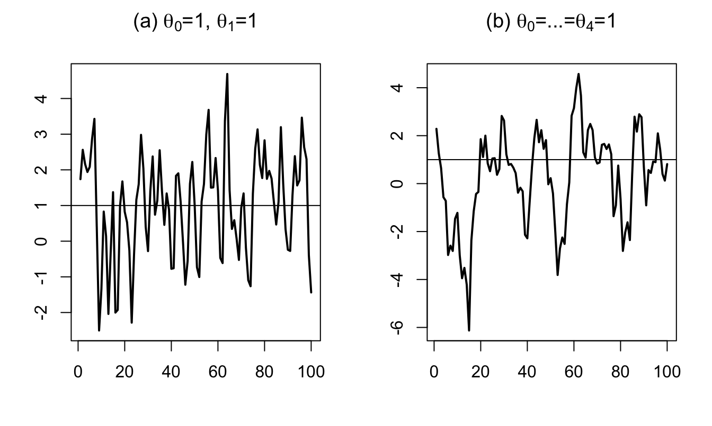
Figure 2.1: Simulated moving-average processes with unit innovation variance and intercept equal to one: (a) MA(1) process with \(\theta_0=\theta_1=1\); (b) MA(4) process with \(\theta_0=\cdots=\theta_4=1\). The horizontal line marks the intercept.
What if the order \(q\) of an MA(q) process gets infinite? The notion of infinite-order Moving Average process exists and is important in time series analysis, as it relates to impulse response functions (as illustrated in Section 2.6). The (infinite) sequence of \(\theta_j\) has to satisfy some conditions for such a process to be well-defined (see Theorem 2.1 below). These conditions relate to the “summability” of the components of the sequence \(\{\theta_{i}\}_{i\in\mathbb{N}}\):
Definition 2.3 (Absolute and square summability) The sequence \(\{\theta_{i}\}_{i\in\mathbb{N}}\) is absolutely summable if \(\sum_{i=0}^{\infty}|\theta_i| < + \infty\), and it is square summable if \(\sum_{i=0}^{\infty} \theta_i^2 < + \infty\).
According to Prop. 8.8 (in the appendix), absolute summability implies square summability.
Theorem 2.1 (Existence condition for an infinite MA process) If \(\{\theta_{i}\}_{i\in\mathbb{N}}\) is square summable (see Def. 2.3) and if \(\{\varepsilon_t\}_{t = -\infty}^{+\infty}\) is a white noise process (see Def. 1.1), then \[ \mu + \sum_{i=0}^{+\infty} \theta_{i} \varepsilon_{t-i} \] defines a well-behaved [covariance-stationary] process, called infinite-order MA process (MA(\(\infty\))).
Proof. See Appendix 3.A in Hamilton. “Well behaved” means that \(\Sigma_{i=0}^{T} \theta_{t-i} \varepsilon_{t-i}\) converges in mean square (Def. 8.14) to some random variable \(Z_t\). The proof makes use of the fact that: \[ \mathbb{E}\left[\left(\sum_{i=N}^{M}\theta_{i} \varepsilon_{t-i}\right)^2\right] = \sum_{i=N}^{M}|\theta_{i}|^2 \sigma^2, \] and that, when \(\{\theta_{i}\}\) is square summable, \(\forall \eta>0\), \(\exists N\) s.t. the right-hand-side term in the last equation is lower than \(\eta\) for all \(M \ge N\) (static Cauchy criterion, Theorem 8.2). This implies that \(\Sigma_{i=0}^{T} \theta_{i} \varepsilon_{t-i}\) converges in mean square (stochastic Cauchy criterion, see Theorem 8.3).
Proposition 2.2 (First two moments of an infinite MA process) If \(\{\theta_{i}\}_{i\in\mathbb{N}}\) is absolutely summable, i.e., if \(\sum_{i=0}^{\infty}|\theta_i| < + \infty\), then
- \(y_t = \mu + \sum_{i=0}^{+\infty} \theta_{i} \varepsilon_{t-i}\) exists (Theorem 2.1) and is such that: \[\begin{eqnarray*} \mathbb{E}(y_t) &=& \mu\\ \gamma_0 = \mathbb{E}([y_t-\mu]^2) &=& \sigma^2(\theta_0^2 +\theta_1^2 + \dots)\\ \gamma_j = \mathbb{E}([y_t-\mu][y_{t-j}-\mu]) &=& \sigma^2(\theta_0\theta_j + \theta_{1}\theta_{j+1} + \dots). \end{eqnarray*}\]
- Process \(y_t\) has absolutely summable auto-covariances, which implies that the results of Theorem 1.1 (Central Limit) apply.
Proof. The absolute summability of \(\{\theta_{i}\}\) and the fact that \(\mathbb{E}(\varepsilon^2)<\infty\) imply that the order of integration and summation is interchangeable (see Hamilton, 1994, Footnote p. 52), which proves (i). For (ii), see end of Appendix 3.A in Hamilton (1994).
2.2 Auto-Regressive (AR) processes
Definition 2.4 (First-order AR process (AR(1))) Process \(y_t\) is an AR(1) process if its dynamics is defined by the following difference equation: \[ y_t = c + \phi y_{t-1} + \varepsilon_t, \] where \(\{\varepsilon_t\}_{t = -\infty}^{+\infty}\) is a white noise process (see Def. 1.1).
If \(|\phi|\ge1\), \(y_t\) is not stationary. Indeed, we have: \[\begin{eqnarray*} y_{t+k} &=& c + \varepsilon_{t+k} + \phi ( c + \varepsilon_{t+k-1})+ \phi^2 ( c + \varepsilon_{t+k-2})+ \dots + \\ && \phi^{k-1} ( c + \varepsilon_{t+1}) + \phi^k y_t. \end{eqnarray*}\] Therefore, the conditional variance \[ \mathbb{V}ar_t(y_{t+k}) = \sigma^2(1 + \phi^2 + \phi^4 + \dots + \phi^{2(k-1)}) \] (where \(\sigma^2\) is the variance of \(\varepsilon_t\)) does not converge when \(k\) gets infinitely large. This implies that \(\mathbb{V}ar(y_{t})\) does not exist.2 By contrast, if \(|\phi| < 1\), we have: \[ y_t = c + \varepsilon_t + \phi ( c + \varepsilon_{t-1})+ \phi^2 ( c + \varepsilon_{t-2})+ \dots + \phi^k ( c + \varepsilon_{t-k}) + \dots \] Hence, if \(|\phi| < 1\), the unconditional mean and variance of \(y_t\) are: \[ \mathbb{E}(y_t) = \frac{c}{1-\phi} =: \mu \quad \mbox{and} \quad \mathbb{V}ar(y_t) = \frac{\sigma^2}{1-\phi^2}. \]
Let us compute the \(j^{th}\) autocovariance of the AR(1) process: \[\begin{eqnarray*} \mathbb{E}([y_{t} - \mu][y_{t-j} - \mu]) &=& \mathbb{E}([\varepsilon_t + \phi \varepsilon_{t-1}+ \phi^2 \varepsilon_{t-2} + \dots + {\color{red}\phi^j \varepsilon_{t-j}} + {\color{blue}\phi^{j+1} \varepsilon_{t-j-1}} \dots]\times \\ &&[{\color{red}\varepsilon_{t-j}} + {\color{blue}\phi \varepsilon_{t-j-1}} + \phi^2 \varepsilon_{t-j-2} + \dots + \phi^k \varepsilon_{t-j-k} + \dots])\\ &=& \mathbb{E}({\color{red}\phi^j \varepsilon_{t-j}^2}+{\color{blue}\phi^{j+2} \varepsilon_{t-j-1}^2}+\phi^{j+4} \varepsilon_{t-j-2}^2+\dots)\\ &=& \frac{\phi^j \sigma^2}{1 - \phi^2}. \end{eqnarray*}\]
Therefore, the auto-correlation is given by \(\rho_j = \phi^j\).
By what precedes, we have:
Proposition 2.3 (Covariance-stationarity of an AR(1) process) The AR(1) process, as defined in Def. 2.4, is covariance-stationary iff \(|\phi|<1\).
Definition 2.5 (AR(p) process) Process \(y_t\) is a \(p^{th}\)-order autoregressive process (AR(p)) if its dynamics is defined by the following difference equation (with \(\phi_p \ne 0\)): \[\begin{equation} y_t = c + \phi_1 y_{t-1} + \phi_2 y_{t-2} + \dots + \phi_p y_{t-p} + \varepsilon_t,\tag{2.3} \end{equation}\] where \(\{\varepsilon_t\}_{t = -\infty}^{+\infty}\) is a white noise process (see Def. 1.1).
As we will see, the covariance-stationarity of process \(y_t\) hinges on the eigenvalues of matrix \(F\), defined as: \[\begin{equation} F = \left[ \begin{array}{ccccc} \phi_1 & \phi_2 & \dots& & \phi_p \\ 1 & 0 &\dots && 0 \\ 0 & 1 &\dots && 0 \\ \vdots & & \ddots && \vdots \\ 0 & 0 &\dots &1& 0 \\ \end{array} \right].\tag{2.4} \end{equation}\]
Note that this matrix \(F\) is such that if \(y_t\) follows Eq. (2.3), then process \(\mathbf{y}_t\) follows: \[ \mathbf{y}_t = \mathbf{c} + F \mathbf{y}_{t-1} + \boldsymbol\xi_t \] with \[ \mathbf{c} = \left[\begin{array}{c} c\\ 0\\ \vdots\\ 0 \end{array}\right], \quad \boldsymbol\xi_t = \left[\begin{array}{c} \varepsilon_t\\ 0\\ \vdots\\ 0 \end{array}\right], \quad \mathbf{y}_t = \left[\begin{array}{c} y_t\\ y_{t-1}\\ \vdots\\ y_{t-p+1} \end{array}\right]. \]
Proposition 2.4 (The eigenvalues of matrix F) The eigenvalues of \(F\) (defined by Eq. (2.4)) are the solutions of: \[\begin{equation} \lambda^p - \phi_1 \lambda^{p-1} - \dots - \phi_{p-1}\lambda - \phi_p = 0.\tag{2.5} \end{equation}\]
Proof. See Appendix 1.A in Hamilton (1994)
Proposition 2.5 (Covariance-stationarity of an AR(p) process) These four statements are equivalent:
- Process \(\{y_t\}\), defined in Def. 2.5, is covariance-stationary.
- The eigenvalues of \(F\) (as defined Eq. (2.4)) lie strictly within the unit circle.
- The roots of Eq. (2.6) (below) lie strictly outside the unit circle. \[\begin{equation} 1 - \phi_1 z - \dots - \phi_{p-1}z^{p-1} - \phi_p z^p = 0.\tag{2.6} \end{equation}\]
- The roots of Eq. (2.7) (below) lie strictly inside the unit circle. \[\begin{equation} \lambda^p - \phi_1 \lambda^{p-1} - \dots - \phi_{p-1}\lambda - \phi_p = 0.\tag{2.7} \end{equation}\]
Proof. We consider the case where the eigenvalues of \(F\) are distinct.3 When the eigenvalues of \(F\) are distinct, \(F\) admits the following spectral decomposition: \(F = PDP^{-1}\), where \(D\) is diagonal. Using the notations introduced in Eq. (2.4), we have: \[ \mathbf{y}_{t} = \mathbf{c} + F \mathbf{y}_{t-1} + \boldsymbol\xi_{t}. \] Let’s introduce \(\mathbf{d} = P^{-1}\mathbf{c}\), \(\mathbf{z}_t = P^{-1}\mathbf{y}_t\) and \(\boldsymbol\eta_t = P^{-1}\boldsymbol\xi_t\). We have: \[ \mathbf{z}_{t} = \mathbf{d} + D \mathbf{z}_{t-1} + \boldsymbol\eta_{t}. \] Because \(D\) is diagonal, the different component of \(\mathbf{z}_t\), denoted by \(z_{i,t}\), follow AR(1) processes. The (scalar) autoregressive parameters of these AR(1) processes are the diagonal entries of \(D\)—which also are the eigenvalues of \(F\)—that we denote by \(\lambda_i\).
Process \(y_t\) is covariance-stationary iff \(\mathbf{y}_{t}\) also is covariance-stationary, which is the case iff all \(z_{i,t}\), \(i \in \{1,\dots,p\}\), are covariance-stationary. By Prop. 2.3, process \(z_{i,t}\) is covariance-stationary iff \(|\lambda_i|<1\). This proves that (i) is equivalent to (ii). Prop. 2.4 further proves that (ii) is equivalent to (iv). Finally, it is easily seen that (iii) is equivalent to (iv) (as long as \(\phi_p \ne 0\)4).
Using the lag operator (see Eq (1.1)), if \(y_t\) is a covariance-stationary AR(p) process (Def. 2.5), we can write: \[ y_t = \mu + \psi(L)\varepsilon_t, \] where \[\begin{equation} \psi(L) = (1 - \phi_1 L - \dots - \phi_p L^p)^{-1}, \end{equation}\] and \[\begin{equation} \mu = \mathbb{E}(y_t) = \dfrac{c}{1-\phi_1 -\dots - \phi_p}.\tag{2.8} \end{equation}\]
In the following lines of codes, we compute the eigenvalues of the \(F\) matrices associated with the following processes (where \(\varepsilon_t\) is a white noise): \[\begin{eqnarray*} x_t &=& 0.9 x_{t-1} -0.2 x_{t-2} + \varepsilon_t\\ y_t &=& 1.1 y_{t-1} -0.3 y_{t-2} + \varepsilon_t\\ w_t &=& 1.4 w_{t-1} -0.7 w_{t-2} + \varepsilon_t\\ z_t &=& 0.9 z_{t-1} +0.2 z_{t-2} + \varepsilon_t. \end{eqnarray*}\]
Code
## [,1] [,2]
## lambda_x 0.500000+0.0000000i 0.4000000+0.0000000i
## lambda_y 0.600000+0.0000000i 0.5000000+0.0000000i
## lambda_w 0.700000+0.4582576i 0.7000000-0.4582576i
## lambda_z 1.084429+0.0000000i -0.1844289+0.0000000iThe absolute values of the eigenvalues associated with process \(w_t\) are both equal to 0.837. Therefore, according to Proposition 2.5, processes \(x_t\), \(y_t\), and \(w_t\) are covariance-stationary, but not \(z_t\) (because, for the latter process, the absolute value of one of the eigenvalues of matrix \(F\) is larger than 1).
The computation of the autocovariances of \(y_t\) is based on the so-called Yule-Walker equations (Eq. (2.9)). Let’s rewrite Eq. (2.3): \[ (y_t-\mu) = \phi_1 (y_{t-1}-\mu) + \phi_2 (y_{t-2}-\mu) + \dots + \phi_p (y_{t-p}-\mu) + \varepsilon_t. \] Multiplying both sides by \(y_{t-j}-\mu\) and taking expectations leads to the (Yule-Walker) equations: \[\begin{equation} \gamma_j = \left\{ \begin{array}{l} \phi_1 \gamma_{j-1}+\phi_2 \gamma_{j-2}+ \dots + \phi_p \gamma_{j-p} \quad if \quad j>0\\ \phi_1 \gamma_{1}+\phi_2 \gamma_{2}+ \dots + \phi_p \gamma_{p} + \sigma^2 \quad for \quad j=0, \end{array} \right.\tag{2.9} \end{equation}\] where \(\sigma^2\) is the variance of \(\varepsilon_t\).
Using \(\gamma_j = \gamma_{-j}\) (Prop. 1.1), one can express \((\gamma_0,\gamma_1,\dots,\gamma_{p})\) as functions of \((\sigma^2,\phi_1,\dots,\phi_p)\). Indeed, we have: \[ \left[\begin{array}{c} \gamma_0 \\ \gamma_1 \\ \gamma_2 \\ \vdots\\ \gamma_p \end{array}\right] = \underbrace{\left[\begin{array}{cccccccc} 0 & \phi_1 & \phi_2 & \dots &&& \phi_p \\ \phi_1 & \phi_2 & \dots &&& \phi_p & 0 \\ \phi_2 & (\phi_1 + \phi_3) & \phi_4 & \dots & \phi_p& 0& 0 \\ \vdots\\ \phi_p & \phi_{p-1} & \dots &&\phi_2& \phi_1 & 0 \end{array}\right]}_{=H}\left[\begin{array}{c} \gamma_0 \\ \gamma_1 \\ \gamma_2 \\ \vdots\\ \gamma_p \end{array}\right] + \left[\begin{array}{c} \sigma^2 \\ 0 \\ 0 \\ \vdots\\ 0 \end{array}\right], \]
which is easily solved by inverting matrix \(Id - H\).
2.3 AR-MA processes
Definition 2.6 (ARMA(p,q) process) \(\{y_t\}\) is an ARMA(\(p\),\(q\)) process if its dynamics is described by the following equation: \[\begin{equation} y_t = c + \underbrace{\phi_1 y_{t-1} + \dots + \phi_p y_{t-p}}_{\mbox{AR part}} + \underbrace{\varepsilon_t + \theta_1 \varepsilon_{t-1} + \dots + \theta_q \varepsilon_{t-q}}_{\mbox{MA part}},\tag{2.10} \end{equation}\] where \(\{\varepsilon_t\}_{t \in ] -\infty,+\infty[}\), of variance \(\sigma^2\) (say), is a white noise process (see Def. 1.1).
Proposition 2.6 (Stationarity of an ARMA(p,q) process) The ARMA(\(p\),\(q\)) process defined in 2.6 is covariance stationary iff the roots of \[ 1 - \phi_1 z - \dots - \phi_p z^p=0 \] lie strictly outside the unit circle or, equivalently, iff those of \[ \lambda^p - \phi_1 \lambda^{p-1} - \dots - \phi_p=0 \] lie strictly within the unit circle.
Proof. The proof of Prop. 2.5 can be adapted to the present case. The MA part of the ARMA process is not problematic for this process to be covariance-stationary. Only the AR part matters and needs to be checked (i.e. check if all the eigenvalues of the underlying \(F\) matrix are stictly lower than \(1\) in absolute value) to make sure that this process is stationary.
We can write: \[ (1 - \phi_1 L - \dots - \phi_p L^p)y_t = c + (1 + \theta_1 L + \dots + \theta_q L^q)\varepsilon_t. \]
If the roots of \(1 - \phi_1 z - \dots - \phi_p z^p=0\) lie outside the unit circle, we have: \[\begin{equation} y_t = \mu + \psi(L)\varepsilon_t,\tag{2.11} \end{equation}\] where \[ \psi(L) = \frac{1 + \theta_1 L + \dots + \theta_q L^q}{1 - \phi_1 L - \dots - \phi_p L^p} \quad and \quad \mu = \dfrac{c}{1-\phi_1 -\dots - \phi_p}. \]
Eq. (2.11) is the Wold representation of this ARMA process (see Theorem 2.2 below). In Section 2.6 (and more precisely in Proposition 2.7), we will see how to obtain the first \(h\) terms of the infinite polynomial \(\Psi(L)\).
Importantly, note that the stationarity of the process depends only on the AR specification (or on the eigenvalues of matrix \(F\), exactly as in Prop. 2.5). When an ARMA process is stationary, the weights in \(\psi(L)\) decay at a geometric rate.
2.4 PACF approach to identify AR/MA processes
We have seen that the \(k^{th}\)-order auto-correlation of an MA(q) process is null if \(k>q\). This is exploited, in practice, to determine the order of an MA process. Moreover, since this is not the case for an AR process, this can be used to distinguish an AR from an MA process.
There exists an equivalent condition that is satisfied by AR processes, and that can be used to determine whether a time series process can be modeled as an AR process. This condition relates to partial auto-correlations:
Definition 2.7 (Partial auto-correlation) The partial auto-correlation (\(\phi_{h,h}\)) of process \(\{y_t\}\) is defined as the partial correlation of \(y_{t+h}\) and \(y_t\) given \(y_{t+h-1},\dots,y_{t+1}\). (see Def. 8.5 for the definition of partial correlation.)
If \(h>p\), the regression of \(y_{t+h}\) on \(y_{t+h-1},\dots,y_{t+1}\) is: \[ y_{t+h} = c + \phi_1 y_{t+h-1}+\dots+ \phi_p y_{t+h-p} +\underbrace{0 \times y_{t+h-p-1}+\dots+0 \times y_{t+1}}_{=0}+ \varepsilon_{t+h}. \] The residuals of the latter regressions (\(\varepsilon_{t+h}\)) are uncorrelated to \(y_t\). Then the partial autocorrelation is zero for \(h>p\).
Besides, it can be shown that \(\phi_{p,p}=\phi_p\). Hence \(\phi_{p,p}=\phi_p\) but \(\phi_{h,h}=0\) for \(h>p\). This can be used to determine the order of an AR process. By contrast (importantly) if \(y_t\) follows an MA(q) process, then \(\phi_{k,k}\) asymptotically approaches zero instead of cutting off abruptly.
As illustrated below, the functions acf and pacf of R allow us to conveniently implement the (P)ACF approach. (In these lines of codes, note also the use of function sim.arma to simulate ARMA processes.)
Code
library(IdSS)
par(mfrow=c(3,2))
par(plt=c(.2,.9,.2,.95))
theta <- c(1,2,1);phi=0
y.sim <- sim.arma(c=0,phi,theta,sigma=1,T=1000,y.0=0,nb.sim=1)
par(mfg=c(1,1));plot(y.sim,type="l",lwd=2,main="(a) Simulated MA(2)")
par(mfg=c(2,1));acf(y.sim,main="(c) ACF: MA(2)")
par(mfg=c(3,1));pacf(y.sim,main="(e) PACF: MA(2)")
theta <- c(1);phi=0.9
y.sim <- sim.arma(c=0,phi,theta,sigma=1,T=1000,y.0=0,nb.sim=1)
par(mfg=c(1,2));plot(y.sim,type="l",lwd=2,main="(b) Simulated AR(1)")
par(mfg=c(2,2));acf(y.sim,main="(d) ACF: AR(1)")
par(mfg=c(3,2));pacf(y.sim,main="(f) PACF: AR(1)")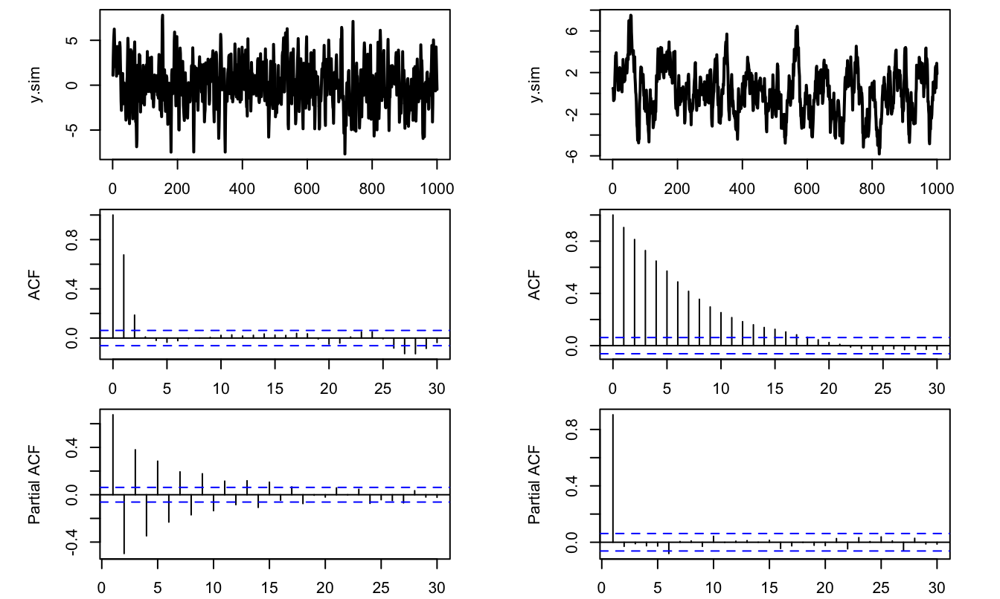
Figure 2.2: Simulated samples and correlograms for two processes, each with 1,000 observations. Left column: (a) simulated MA(2) process, (c) its sample autocorrelation function, and (e) its sample partial autocorrelation function. Right column: (b) simulated AR(1) process, (d) its sample autocorrelation function, and (f) its sample partial autocorrelation function.
2.5 Wold decomposition
The Wold decomposition is an important result in time series analysis:
Theorem 2.2 (Wold decomposition) Any covariance-stationary process admits the following representation: \[ y_t = \mu + \sum_{0}^{+\infty} \psi_i \varepsilon_{t-i} + \kappa_t, \] where
- \(\psi_0 = 1\), \(\sum_{i=0}^{\infty} \psi_i^2 < +\infty\) (square summability, see Def. 2.3).
- \(\{\varepsilon_t\}\) is a white noise (see Def. 1.1); \(\varepsilon_t\) is the error made when forecasting \(y_t\) based on a linear combination of lagged \(y_t\)’s (\(\varepsilon_t = y_t - \hat{\mathbb{E}}[y_t|y_{t-1},y_{t-2},\dots]\)).
- For any \(j \ge 1\), \(\kappa_t\) is not correlated with \(\varepsilon_{t-j}\); but \(\kappa_t\) can be perfectly forecasted based on a linear combination of lagged \(y_t\)’s (i.e. \(\kappa_t = \hat{\mathbb{E}}(\kappa_t|y_{t-1},y_{t-2},\dots)\)). \(\kappa_t\) is called the deterministic component of \(y_t\).
Proof. See Anderson (1971). Partial proof in L. Christiano’s lecture notes.
For an ARMA process, the Wold representation is given by Eq. (2.11). As detailed in Prop. 2.7, it can be computed by recursively replacing the lagged \(y_t\)’s in Eq. (2.10). In this case, the deterministic component (\(\kappa\)) is null.
2.6 Impulse Response Functions (IRFs) in ARMA models
Consider the ARMA(p,q) process defined in Def. 2.6. Let us construct a novel (counterfactual) sequence of shocks \(\{\tilde\varepsilon_t^{(s)}\}\): \[ \tilde\varepsilon_t^{(s)} = \left\{ \begin{array}{lcc} \varepsilon_{t} & if & t \ne s,\\ \varepsilon_{t} + 1 &if& t=s. \end{array} \right. \] Hence, the only difference between processes \(\{\varepsilon_t^{(s)}\}\) and \(\{\tilde\varepsilon_t^{(s)}\}\) pertains to date \(s\), where \(\varepsilon_s\) is replaced with \(\varepsilon_s + 1\) in \(\{\tilde\varepsilon_t^{(s)}\}\).
We denote by \(\{\tilde{y}_t^{(s)}\}\) the process following Eq. (2.10) where \(\{\varepsilon_t\}\) is replaced with \(\{\tilde\varepsilon_t^{(s)}\}\). The time series \(\{\tilde{y}_t^{(s)}\}\) is the counterfactual series \(\{y_t\}\) that would have prevailed if \(\varepsilon_t\) had been shifted by one unit on date \(s\) (and that would be the only change).
The relationship between \(\{y_t\}\) and \(\{\tilde{y}_t^{(s)}\}\) defines the dynamic multipliers of \(\{y_t\}\). The dynamic multiplier \(\frac{\partial y_t}{\partial \varepsilon_{s}}\) corresponds to the impact on \(y_t\) of a unit increase in \(\varepsilon_s\) (on date \(s\)). Using the notation introduced before for \(\tilde{y}_t^{(s)}\), we have: \[ \tilde{y}_t^{(s)} = y_t + \frac{\partial y_t}{\partial \varepsilon_{s}}. \] Let us show that the dynamic multipliers are closely related to the infinite MA representation (or Wold decomposition, Theorem 2.2) of \(y_t\): \[ y_t = \mu + \sum_{i=0}^{+\infty} \psi_i \varepsilon_{t-i}. \] For \(t<s\), we have \(y_t = \tilde{y}_t^{(s)}\) (because \(\tilde{\varepsilon}_{t-i}= \varepsilon_{t-i}\) for all \(i \ge 0\) if \(t<s\)).
For \(t \ge s\): \[ \tilde{y}_t^{(s)} = \mu + \left( \sum_{i=0}^{t-s-1} \psi_i \varepsilon_{t-i} \right) + \psi_{t-s}(\varepsilon_{s}+1) + \left( \sum_{i=t-s+1}^{+\infty} \psi_i \varepsilon_{t-i} \right)=y_t + \frac{\partial y_t}{\partial \varepsilon_{s}}. \] Therefore, it comes that the only difference between \(\tilde{y}_t^{(s)}\) and \(y_t\) is \(\psi_{t-s}\). As a result, for \(t \ge s\), we have: \[ \boxed{\dfrac{\partial y_t}{\partial \varepsilon_{s}}=\psi_{t-s}.} \] That is, \(\{y_t\}\)’s dynamic multiplier of order \(k\) is the same object as the \(k^{th}\) loading \(\psi_k\) in the Wold decomposition of \(\{y_t\}\). The sequence \(\left\{\dfrac{\partial y_{t+h}}{\partial \varepsilon_{t}}\right\}_{h \ge 0} \equiv \left\{\psi_h\right\}_{h \ge 0}\) defines the impulse response function (IRF) of \(y_t\) to the shock \(\varepsilon_t\).
For ARMA processes, one can compute the IRFs (or the Wold decomposition) by using a simple recursive algorithm:
Proposition 2.7 (IRF of an ARMA(p,q) process) The coefficients \(\psi_h\), that define the IRF of process \(y_t\) to \(\varepsilon_t\), can be computed recursively as follows:
- Set \(\psi_{-1}=\dots=\psi_{-p}=0\).
- For \(h \ge 0\), (recursively) apply: \[ \psi_h = \phi_1 \psi_{h-1} + \dots + \phi_p \psi_{h-p} + \theta_h, \] where \(\theta_h = 0\) for \(h>q\).
Proof. This is obtained by applying the operator \(\frac{\partial}{\partial \varepsilon_{t}}\) on both sides of Eq. (2.10): \[ y_{t+h} = c + \phi_1 y_{t+h-1} + \dots + \phi_p y_{t+h-p} + \varepsilon_{t+h} + \theta_1 \varepsilon_{t+h-1} + \dots + \theta_q \varepsilon_{t+h-q}. \]
Note that Proposition 2.7 constitutes a simple way to compute the MA(\(\infty\)) representation (or Wold representation) of an ARMA process.
One can use function sim.arma of package IdSS to compute ARMA’s IRFs (with the argument make.IRF = 1):
Code
T <- 21 # number of periods for IRF
theta <- c(1,1,1);phi <- c(0);c <- 0
y.sim <- sim.arma(c,phi,theta,sigma=1,T,y.0=rep(0,length(phi)),
nb.sim=1,make.IRF = 1)
par(mfrow=c(1,3));par(plt=c(.25,.95,.2,.85))
plot(0:(T-1),y.sim[,1],type="l",lwd=2,
main="(a) Process 1",xlab="Time after shock on epsilon",
ylab="Dynamic multiplier (shock on epsilon at t=0)",col="black")
theta <- c(1,.5);phi <- c(0.6)
y.sim <- sim.arma(c,phi,theta,sigma=1,T,y.0=rep(0,length(phi)),
nb.sim=1,make.IRF = 1)
plot(0:(T-1),y.sim[,1],type="l",lwd=2,
main="(b) Process 2",xlab="Time after shock on epsilon",
ylab="",col="black")
theta <- c(1,1,1);phi <- c(0,0,.5,.4)
y.sim <- sim.arma(c,phi,theta,sigma=1,T,y.0=rep(0,length(phi)),
nb.sim=1,make.IRF = 1)
plot(0:(T-1),y.sim[,1],type="l",lwd=2,
main="(c) Process 3",xlab="Time after shock on epsilon",
ylab="",col="black")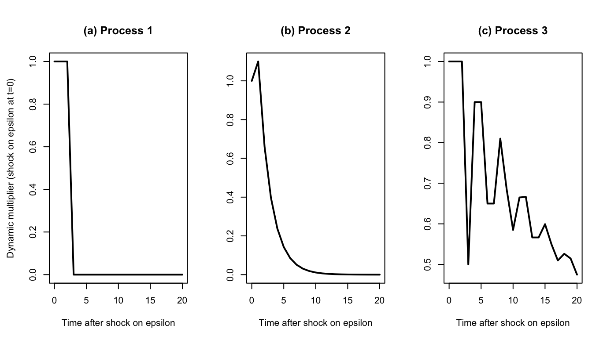
Figure 2.3: IRFs associated with the three processes. Process 1 (MA(2)): \(y_t = \varepsilon_t + \varepsilon_{t-1} + \varepsilon_{t-2}\). Process 2 (ARMA(1,1)): \(y_{t}=0.6y_{t-1} + \varepsilon_t + 0.5\varepsilon_{t-1}\). Process 3 (ARMA(4,2)): \(y_{t}=0.5y_{t-3} + 0.4y_{t-4} + \varepsilon_t + \varepsilon_{t-1} + \varepsilon_{t-2}\).
Consider the annual Swiss GDP growth from the JST macro-history database. Let us first determine relevant orders for AR and MA processes using the (P)ACF approach.
Code
library(IdSS)
data(JST);data <- subset(JST,iso=="CHE")
par(plt=c(.1,.95,.1,.95))
T <- dim(data)[1]
growth <- log(data$gdp[2:T]/data$gdp[1:(T-1)])
par(mfrow=c(3,1));par(plt=c(.1,.95,.15,.95))
plot(data$year[2:T],growth,type="l",xlab="",ylab="",lwd=2,
main="(a) Annual real-GDP growth")
abline(h=0,lty=2)
acf(growth,main="(b) Autocorrelation function")
pacf(growth,main="(c) Partial autocorrelation function")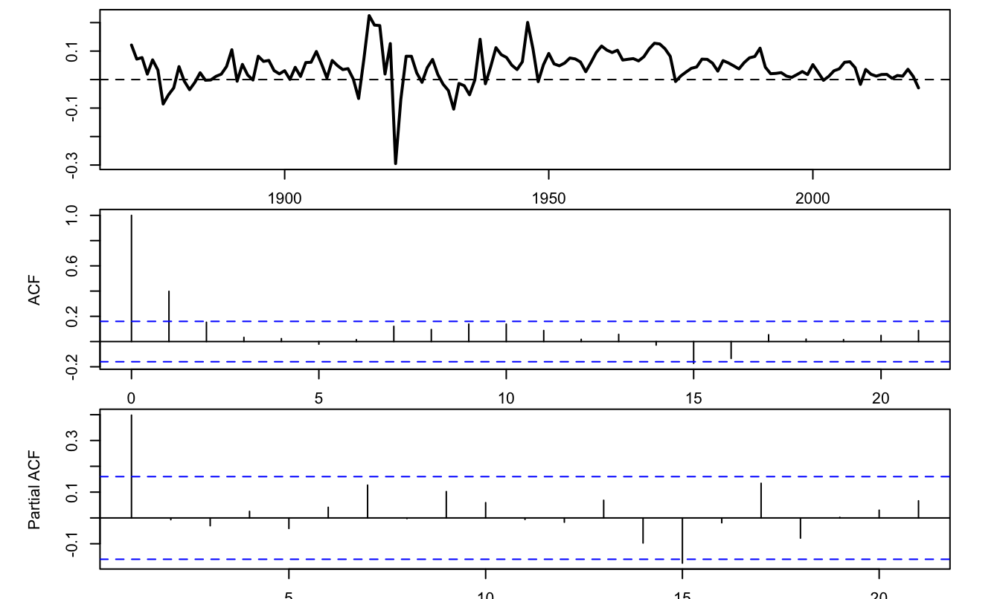
Figure 2.4: Serial-dependence diagnostics for annual Swiss real-GDP growth: (a) growth series; (b) sample autocorrelation function; and (c) sample partial autocorrelation function. Source: Jordà-Schularick-Taylor Macrohistory Database, release 6.
The two bottom plots of Figure 2.4 suggest that either an MA(2)5 or an AR(1)6could be used to model the GDP growth rate series. Figure 2.5 shows the IRFs based on these two respective specifications.
Code
# Fit an AR process:
res <- arima(growth,order=c(1,0,0))
phi <- res$coef[1]
T <- 11
y.sim <- sim.arma(c=0,phi,theta=1,sigma=1,T,y.0=rep(0,length(phi)),
nb.sim=1,make.IRF = 1)
par(plt=c(.15,.95,.25,.95))
plot(0:(T-1),y.sim[,1],type="l",lwd=3,
xlab="Time after shock on epsilon",
ylab="Dynamic multiplier (shock on epsilon at t=0)",col="black")
# Fit a MA process:
res <- arima(growth,order=c(0,0,2))
phi <- 0;theta <- c(1,res$coef[1:2])
y.sim <- sim.arma(c=0,phi,theta,sigma=1,T,y.0=rep(0,length(phi)),
nb.sim=1,make.IRF = 1)
lines(0:(T-1),y.sim[,1],lwd=3,col="grey45",lty=2)
abline(h=0)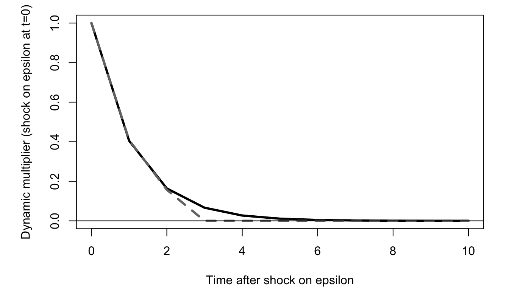
Figure 2.5: Dynamic response of Swiss annual growth to a shock on the innovation \(\varepsilon_t\) at date \(t=0\). The solid line corresponds to an AR(1) specification; the dashed line corresponds to a MA(2) specification.
The same kind of algorithm (as in Prop. 2.7) can be used to compute the impact of an increase in an exogenous variable \(x_t\) within an ARMAX(p,q,r) model (see next section).
2.7 ARMA processes with exogenous variables (ARMA-X)
2.7.1 Definitions (ARMA-X)
ARMA processes do not allow to investigate the influence of an exogenous variable (say \(x_t\)) on the variable of interest (say \(y_t\)). When \(x_t\) and \(y_t\) have reciprocal influences, the Vector Autoregressive (VAR) model may be used (this tools will be studied later, in Section 3). However, when one suspects that \(x_t\) has an “exogenous” influence on \(y_t\), then a simple extension of the ARMA processes may be considered. Loosely speaking, \(x_t\) has an “exogenous” influence on \(y_t\) if \(y_t\) does not affect \(x_t\). This extension is referred to as ARMA-X.
To begin with, let us formalize this notion of exogeneity. Consider a white noise sequence \(\{\varepsilon_t\}\) (Def. 1.1). This white noise will enter the dynamics of \(y_t\), alongside with \(x_t\); but \(x_t\) will be exogenous to \(\varepsilon_t\). (We will also say that \(x_t\) is exogenous to \(y_t\).)
Definition 2.8 (Exogeneity) We say that \(x_t\) is (strictly) exogenous to \(\{\varepsilon_t\}\) if \[ \mathbb{E}(\varepsilon_t|\underbrace{\dots,x_{t+1}}_{\mbox{future}},\underbrace{x_t,x_{t-1},\dots}_{\mbox{present and past}}) = 0. \]
Hence, if \(\{x_t\}\) is strictly exogenous to \(\varepsilon_t\), then past, present and future values of \(x_t\) do not allow to predict the \(\varepsilon_t\)’s.
In the following, we assume that \(\{x_t\}\) is a covariance stationary process.
Definition 2.9 (ARMA-X(p,q,r) model) The process \(\{y_t\}\) is an ARMA-X(p,q,r) if it follows a difference equation of the form: \[\begin{eqnarray} y_t &=& \underbrace{c + \phi_1 y_{t-1} + \dots + \phi_p y_{t-p}}_{\mbox{AR(p) part}} + \underbrace{\beta_0 x_t + \dots + \beta_{r} x_{t-r}}_{\mbox{X(r) part}} + \nonumber \\ &&\underbrace{\varepsilon_t + \theta_1\varepsilon_{t-1}+\dots +\theta_{q}\varepsilon_{t-q},}_{\mbox{MA(q) part}} \tag{2.12} \end{eqnarray}\] where \(\{\varepsilon_t\}\) is an i.i.d. white noise sequence and \(\{x_t\}\) is exogenous to \(y_t\).
2.7.2 Dynamic multipliers in ARMA-X models
What is the effect of a one-unit increase in \(x_t\) on \(y_t\)? To address this question, this notion of “effect” has to be formalized. Let us introduce two related sequences of values for \(\{x\}\). Denote the first by \(\{a\}\) and the second by \(\{\tilde{a}^t\}\). Further, we posit \(a_s = \tilde{a}_s^t\) for all \(s \ne t\), and \(\tilde{a}_t^t = a_t+1\).
With these notations, we define \(\frac{\partial y_{t+h}}{\partial x_t}\) as follows: \[\begin{equation} \frac{\partial y_{t+h}}{\partial x_t} := \mathbb{E}_{t-1}(y_{t+h}|\{x\} = \{\tilde{a}^t\}) - \mathbb{E}_{t-1}(y_{t+h}|\{x\} = \{a\}).\tag{2.13} \end{equation}\] Under the exogeneity assumption, it is easily seen that
\[ \frac{\partial y_t}{\partial x_t} = \beta_0. \] Now, since \[\begin{eqnarray*} y_{t+1} &=& c + \phi_1 y_{t} + \dots + \phi_p y_{t+1-p} + \beta_0 x_{t+1} + \dots + \beta_{r} x_{t+1-r} +\\ &&\varepsilon_{t+1} + \theta_1\varepsilon_{t}+\dots +\theta_{q}\varepsilon_{t+1-q}, \end{eqnarray*}\] and using the exogeneity assumption, we obtain: \[ \frac{\partial y_{t+1}}{\partial x_t} := \phi_1 \frac{\partial y_{t}}{\partial x_t} + \beta_1 = \phi_1\beta_0 + \beta_1. \] This can be applied recursively to give \(\dfrac{\partial y_{t+h}}{\partial x_t}\) for any \(h \ge 0\):
Proposition 2.8 (Dynamic multipliers in ARMA-X models) One can recursively compute the dynamic multipliers \(\frac{\partial y_{t+h}}{\partial x_t}\) as follows:
- Initialization: \(\dfrac{\partial y_{t+h}}{\partial x_t}=0\) for \(h<0\).
- For \(h \ge 0\) and assuming that the first \(h-1\) multipliers have been computed, we have: \[\begin{eqnarray} \dfrac{\partial y_{t+h}}{\partial x_t} &=& \phi_1 \dfrac{\partial y_{t+h-1}}{\partial x_t} + \dots + \phi_p \dfrac{\partial y_{t+h-p}}{\partial x_t} + \beta_h,\tag{2.14} \end{eqnarray}\] where we use the notation \(\beta_h=0\) if \(h>r\).
Remark that the resulting dynamic multipliers are the same as those obtained for an ARMA(p,r) model where the \(\theta_i\)’s are replaced with \(\beta_i\)’s (see Proposition 2.7 in Section 2.7).
It has to be stressed that the definition of the dynamic multipliers (Eq. (2.13)) does not reflect a potential persistency of the shock occuring on date \(t\) in process \(\{x\}\) itself. Going in this direction would necessitate to model the joint dynamics of \(x_t\) (for instance using a VAR model, see Section 3).
Example 2.1 (Influence of the number of freezing days on the price of orange juice) This example is based on data used in J. Stock and Watson (2003) (Chapter 16). The objective is to study the influence of the number of freezing days on the price of orange juice. Let us first estimate a ARMA-X(0,0,3) model:
Code
library(IdSS);library(AER)
data("FrozenJuice")
FJ <- as.data.frame(FrozenJuice)
date <- time(FrozenJuice)
price <- FJ$price/FJ$ppi
T <- length(price)
k <- 1
dprice <- 100*log(price[(k+1):T]/price[1:(T-k)])
fdd <- FJ$fdd[(k+1):T]
par(mfrow=c(3,1))
par(plt=c(.1,.95,.15,.75))
plot(date,price,type="l",xlab="",ylab="",
main="(a) Price of orange Juice")
plot(date,c(NaN,dprice),type="l",xlab="",ylab="",
main="(b) Monthly pct Change (y)")
plot(date,FJ$fdd,type="l",xlab="",ylab="",
main="(c) Number of freezing days (x)")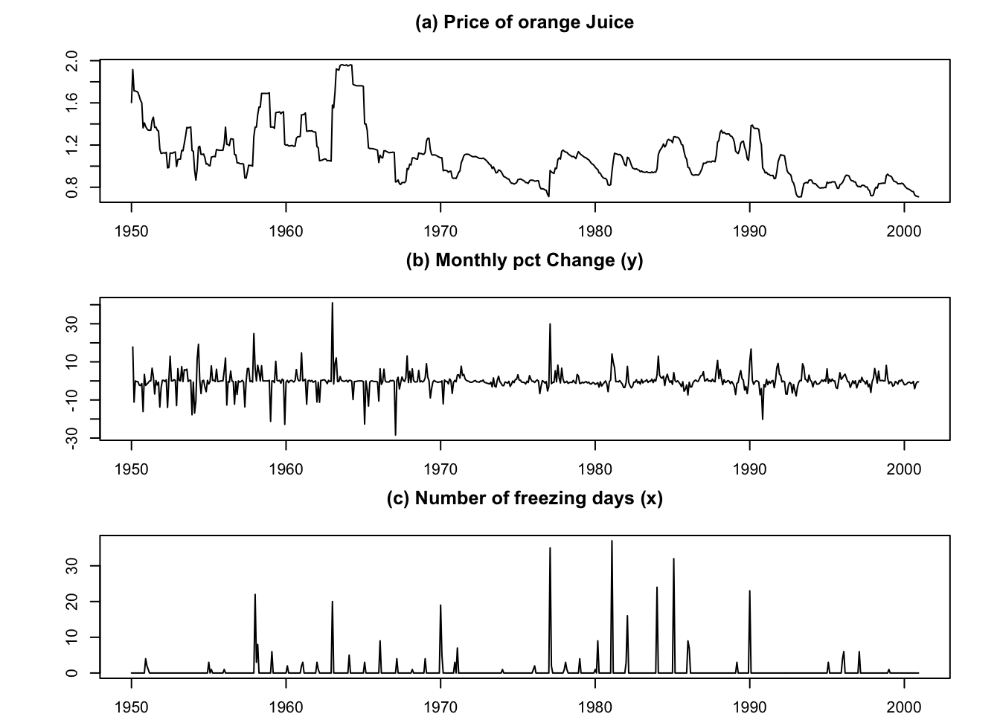
Figure 2.6: Orange-juice data used in the ARMAX example: (a) real orange-juice price; (b) monthly log price change, in percent; and (c) number of freezing-degree days. Source: FrozenJuice data distributed with the AER package, based on Stock and Watson (2003).
Code
nb.lags <- 3
FDD <- FJ$fdd[(nb.lags+1):T]
names.FDD <- NULL
for(i in 1:nb.lags){
FDD <- cbind(FDD,FJ$fdd[(nb.lags+1-i):(T-i)])
names.FDD <- c(names.FDD,paste(" Lag ",toString(i),sep=""))}
colnames(FDD) <- c(" Lag 0",names.FDD)
dprice <- dprice[(length(dprice)-dim(FDD)[1]+1):length(dprice)]
eq <- lm(dprice~FDD)
# Compute the Newey-West std errors:
var.cov.mat <- NeweyWest(eq,lag = 7, prewhite = FALSE)
robust_se <- sqrt(diag(var.cov.mat))
# Stargazer output (with and without Robust SE)
stargazer::stargazer(eq, eq, type = "text",
column.labels=c("(no HAC)","(HAC)"),keep.stat="n",
se = list(NULL,robust_se),no.space = TRUE)##
## =========================================
## Dependent variable:
## ----------------------------
## dprice
## (no HAC) (HAC)
## (1) (2)
## -----------------------------------------
## FDD Lag 0 0.467*** 0.467***
## (0.057) (0.135)
## FDD Lag 1 0.140** 0.140*
## (0.057) (0.083)
## FDD Lag 2 0.055 0.055
## (0.057) (0.056)
## FDD Lag 3 0.073 0.073
## (0.057) (0.047)
## Constant -0.599*** -0.599***
## (0.204) (0.213)
## -----------------------------------------
## Observations 609 609
## =========================================
## Note: *p<0.1; **p<0.05; ***p<0.01Let us now use function estim.armax, from package IdSS to fit an ARMA-X(3,0,1) model:
Code
nb.lags.exog <- 1 # number of lags of exog. variable
FDD <- FJ$fdd[(nb.lags.exog+1):T]
for(i in 1:nb.lags.exog){
FDD <- cbind(FDD,FJ$fdd[(nb.lags.exog+1-i):(T-i)])}
dprice <- 100*log(price[(k+1):T]/price[1:(T-k)])
dprice <- dprice[(length(dprice)-dim(FDD)[1]+1):length(dprice)]
res.armax <- estim.armax(Y = dprice,p=3,q=0,X=FDD)Figure 2.7 shows the IRF associated with each of the two models.
Code
nb.periods <- 20
IRF1 <- sim.arma(c=0,phi=c(0),theta=eq$coefficients[2:(nb.lags+1)],sigma=1,
T=nb.periods,y.0=c(0),nb.sim=1,make.IRF=1)
IRF2 <- sim.arma(c=0,phi=res.armax$phi,theta=res.armax$beta,sigma=1,
T=nb.periods,y.0=rep(0,length(res.armax$phi)),
nb.sim=1,make.IRF=1)
par(plt=c(.15,.95,.2,.95))
plot(IRF1,type="l",lwd=2,col="black",xlab="months after shock",
ylab="Chge in price (percent)")
lines(IRF2,lwd=2,col="grey45",lty=2)
abline(h=0,col="grey")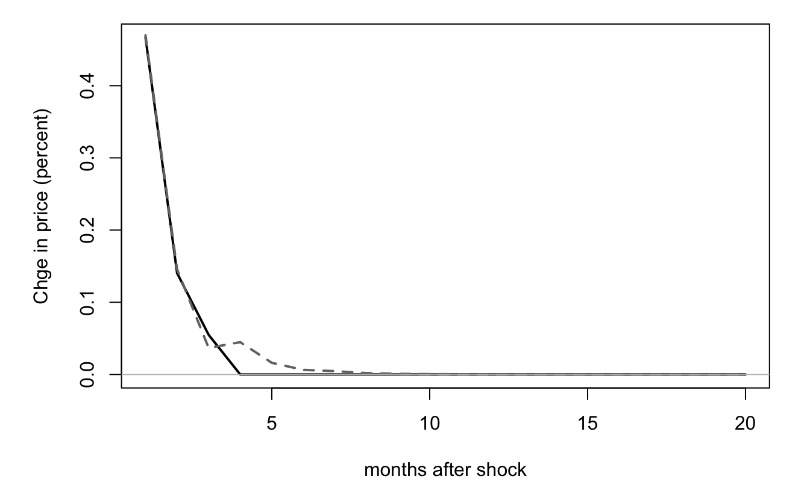
Figure 2.7: Response of changes in orange juice price (in percent) to the number of freezing days. The solid (respectively dashed) line corresponds to the ARMAX(0,0,3) (resp. ARMAX(3,0,1)) model. The first model is estimated by OLS (see above), the second by MLE.
Example 2.2 (Real effect of a monetary policy shock) In this example, we use the monthly monetary-policy shock developed by Bu, Rogers, and Wu. The series is distributed by the Board of Governors of the Federal Reserve System and is included in the redistributable USmonthly dataset of IdSS.
Code
library(IdSS)
data("USmonthly")
T <- nrow(USmonthly)
# Construct growth series:
USmonthly$growth <- USmonthly$LIP -
c(rep(NA_real_,12),USmonthly$LIP[1:(length(USmonthly$LIP)-12)])
# Prepare matrix of exogenous variables:
vec.lags <- c(6:12)
Matrix.of.Exog <- NULL
shocks <- USmonthly$BRW
for(i in 1:length(vec.lags)){Matrix.of.Exog <-
cbind(Matrix.of.Exog,c(rep(NaN,vec.lags[i]),shocks[1:(T-vec.lags[i])]))}
# Look for dates where data are available:
indic.good.dates <- complete.cases(Matrix.of.Exog)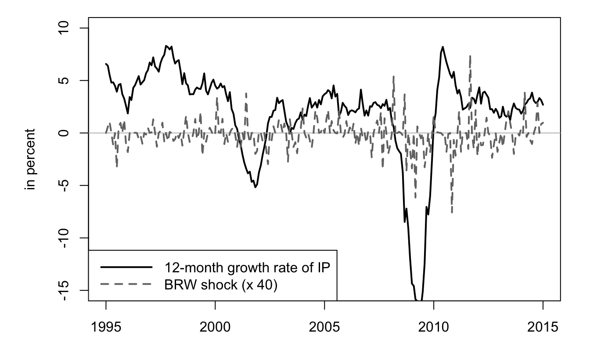
Figure 2.8: U.S. industrial production and monetary-policy shocks. The solid black line is the year-on-year growth rate of industrial production; the dashed grey line is the monthly BRW monetary-policy shock multiplied by 40 for readability. The common sample begins in 1994. Sources: U.S. government macroeconomic series via FRED and Bu, Rogers, and Wu shock series via the Board of Governors.
Code
Figure 2.9 displays the resulting IRF, with a 95% confidence band. The code used to produce the confidence bands (i.e., to compute the standard deviation of the dynamic multipliers for the different horizons) is based on the Delta method (see Appendix 8.5.2).7
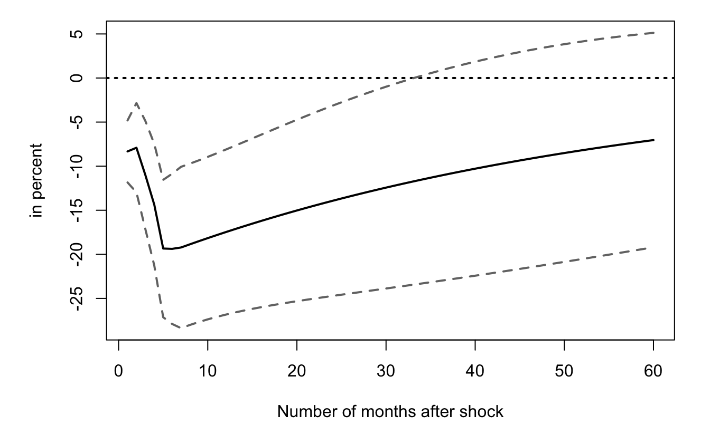
Figure 2.9: Estimated response of U.S. industrial-production growth to a BRW monetary-policy shock. The solid black line is the point estimate; the dashed grey lines are pointwise bands equal to the estimate plus or minus two standard errors, computed with the delta method.
2.8 Maximum Likelihood Estimation (MLE) of ARMA processes
2.8.1 Generalities
Consider the general case (of any time series); assume we observe a sample \(\mathbf{y}=[y_1,\dots,y_T]'\). In order to implement ML techniques, we need to evaluate the joint p.d.f. (or “likelihood”) of \(\mathbf{y}\), i.e., \(\mathcal{L}(\boldsymbol\theta;\mathbf{y})\), where \(\boldsymbol\theta\) is a vector of parameters that characterizes the dynamics of \(y_t\). The Maximum Likelihood (ML) estimate of \(\boldsymbol\theta\) is then given by: \[ \boxed{\boldsymbol\theta_{MLE} = \arg \max_{\boldsymbol\theta} \mathcal{L}(\boldsymbol\theta;\mathbf{y}) = \arg \max_{\boldsymbol\theta} \log \mathcal{L}(\boldsymbol\theta;\mathbf{y}).} \] It is useful to remember Bayes’ formula: \[ \mathbb{P}(X_2=x,X_1=y) = \mathbb{P}(X_2=x|X_1=y)\mathbb{P}(X_1=y). \] Using it leads to the following decomposition of our likelihood function (by considering that \(X_2=Y_T\) and \(X_1=(Y_{T-1},Y_{T-2},\dots,Y_1)\)): \[\begin{eqnarray*} f_{Y_T,\dots,Y_1}(y_T,\dots,y_1;\boldsymbol\theta) &=&f_{\underbrace{Y_T}_{=X_2}|\underbrace{Y_{T-1},\dots,Y_1}_{=X_1}}(y_T,\dots,y_1;\boldsymbol\theta) \times \\ && f_{\underbrace{Y_{T-1},\dots,Y_1}_{=X_1}}(y_{T-1},\dots,y_1;\boldsymbol\theta). \end{eqnarray*}\] Using the previous expression recursively, one obtains that for any \(1 \leq p \leq T\): \[\begin{equation} f_{Y_T,\dots,Y_1}(y_T,\dots,y_1;\boldsymbol\theta) = f_{Y_p,\dots,Y_1}(y_p,\dots,y_1;\boldsymbol\theta) \times \prod_{t=p+1}^{T} f_{Y_t|Y_{t-1},\dots,Y_1}(y_t,\dots,y_1;\boldsymbol\theta).\tag{2.15} \end{equation}\]
In the time series context, if process \(y_t\) is Markovian, then there exists a useful way to rewrite the likelihood \(\mathcal{L}(\boldsymbol\theta;\mathbf{y})\). Let us first recall the definition of a Markovian process:
Definition 2.10 (Markovian process) Process \(y_t\) is Markovian of order one if \(f_{Y_t|Y_{t-1},Y_{t-2},\dots} = f_{Y_t|Y_{t-1}}\). More generally, it is Markovian of order \(k\) if \(f_{Y_t|Y_{t-1},Y_{t-2},\dots} = f_{Y_t|Y_{t-1},\dots,Y_{t-k}}\).
2.8.2 Maximum Likelihood Estimation of AR processes
2.8.2.1 Maximum Likelihood Estimation of an AR(1) process
Let us start with the Gaussian AR(1) process (which is Markovian of order one): \[ y_t = c + \phi_1 y_{t-1} + \varepsilon_t, \quad \varepsilon_t \sim\,i.i.d.\, \mathcal{N}(0,\sigma^2). \] For \(t>1\): \[ f_{Y_t|Y_{t-1},\dots,Y_1}(y_t,\dots,y_1;\boldsymbol\theta) = f_{Y_t|Y_{t-1}}(y_t,y_{t-1};\boldsymbol\theta) \] and \[ f_{Y_t|Y_{t-1}}(y_t,y_{t-1};\boldsymbol\theta) = \frac{1}{\sqrt{2\pi}\sigma}\exp\left(-\frac{(y_t - c - \phi_1 y_{t-1})^2}{2\sigma^2}\right). \]
These expressions can be plugged into Eq. (2.15) that ultimately takes the follwing form with \(p=1\) \[ f_{Y_T,\dots,Y_1}(y_T,\dots,y_1;\boldsymbol\theta) = f_{Y_1}(y_1;\boldsymbol\theta) \times \prod_{t=2}^{T} f_{Y_t|Y_{t-1}}(y_t,y_{t-1};\boldsymbol\theta) \] But what about \(f_{Y_1}(y_1;\boldsymbol\theta)\)? There exist two possibilities:
- Case 1: We use the marginal distribution: \(y_1 \sim \mathcal{N}\left(\dfrac{c}{1-\phi_1},\dfrac{\sigma^2}{1-\phi_1^2}\right)\).
- Case 2: \(y_1\) is considered to be deterministic. In a way, that means that the first observation is “sacrificed”.
For a Gaussian AR(1) process, we have:
Case 1: The (exact) log-likelihood is: \[\begin{eqnarray} \log \mathcal{L}(\boldsymbol\theta;\mathbf{y}) &=& - \frac{T}{2} \log(2\pi) - T\log(\sigma) + \frac{1}{2}\log(1-\phi_1^2)\nonumber \\ && - \frac{(y_1 - c/(1-\phi_1))^2}{2\sigma^2/(1-\phi_1^2)} - \sum_{t=2}^T \left[\frac{(y_t - c - \phi_1 y_{t-1})^2}{2\sigma^2} \right]. \end{eqnarray}\] The Maximum Likelihood Estimator of \(\boldsymbol\theta= [c,\phi_1,\sigma^2]\) is obtained by numerical optimization.
Case 2: The (conditional) log-likelihood (denoted with a \(*\)) is: \[\begin{eqnarray} \log \mathcal{L}^*(\boldsymbol\theta;\mathbf{y}) &=& - \frac{T-1}{2} \log(2\pi) - (T-1)\log(\sigma)\nonumber\\ && - \sum_{t=2}^T \left[\frac{(y_t - c - \phi_1 y_{t-1})^2}{2\sigma^2} \right].\tag{2.16} \end{eqnarray}\]
Exact MLE and conditional MLE have the same asymptotic (i.e. large-sample) distribution. Indeed, when the process is stationary, \(f_{Y_1}(y_1;\boldsymbol\theta)\) makes a relatively negligible contribution to \(\log \mathcal{L}(\boldsymbol\theta;\mathbf{y})\).
The conditional MLE has a substantial advantage: in the Gaussian case, the conditional MLE is simply obtained by OLS. Indeed, let us introduce the notations: \[ Y = \left[\begin{array}{c} y_2\\ \vdots\\ y_T \end{array}\right] \quad and \quad X = \left[\begin{array}{cc} 1 &y_1\\ \vdots&\vdots\\ 1&y_{T-1} \end{array}\right]. \] Eq. (2.16) then rewrites: \[\begin{eqnarray} \log \mathcal{L}^*(\boldsymbol\theta;\mathbf{y}) &=& - \frac{T-1}{2} \log(2\pi) - (T-1)\log(\sigma) \nonumber \\ && - \frac{1}{2\sigma^2} \underbrace{(Y-X[c,\phi_1]')'(Y-X[c,\phi_1]')}_{=\displaystyle \sum_{t=2}^T (y_t-c-\phi_1 y_{t-1})^2}, \end{eqnarray}\] which is maximised for8: \[\begin{eqnarray} [\hat{c},\hat\phi_1]' &=& (X'X)^{-1}X'Y \tag{2.17} \\ \hat{\sigma^2} &=& \frac{1}{T-1} \sum_{t=2}^T (y_t - \hat{c} - \hat{\phi_1}y_{t-1})^2 \nonumber \\ &=& \frac{1}{T-1} Y'(I - X(X'X)^{-1}X')Y. \tag{2.18} \end{eqnarray}\]
2.8.2.2 Maximum Likelihood Estimation of an AR(p) process
Let us turn to the case of an AR(p) process which is Markovian of order \(p\). We have: \[\begin{eqnarray*} \log \mathcal{L}(\boldsymbol\theta;\mathbf{y}) &=& \log f_{Y_p,\dots,Y_1}(y_p,\dots,y_1;\boldsymbol\theta) +\\ && \underbrace{\sum_{t=p+1}^{T} \log f_{Y_t|Y_{t-1},\dots,Y_{t-p}}(y_t,\dots,y_{t-p};\boldsymbol\theta)}_{\log \mathcal{L}^*(\boldsymbol\theta;\mathbf{y})}. \end{eqnarray*}\] where \(f_{Y_p,\dots,Y_{1}}(y_p,\dots,y_{1};\boldsymbol\theta)\) is the marginal distribution of \(\mathbf{y}_{1:p} := [y_p,\dots,y_1]'\). The marginal distribution of \(\mathbf{y}_{1:p}\) is Gaussian; it is therefore fully characterised by its mean and covariance matrix: \[\begin{eqnarray*} \mathbb{E}(\mathbf{y}_{1:p})&=&\frac{c}{1-\phi_1-\dots-\phi_p} \mathbf{1}_{p\times 1} \\ \mathbb{V}ar(\mathbf{y}_{1:p}) &=& \left[\begin{array}{cccc} \gamma_0 & \gamma_1 & \dots & \gamma_{p-1} \\ \gamma_1 & \gamma_0 & \dots & \gamma_{p-2} \\ \vdots & & \ddots & \vdots \\ \gamma_{p-1} & \gamma_{p-2} & \dots & \gamma_{0} \\ \end{array}\right], \end{eqnarray*}\] where the \(\gamma_i\)’s are computed using the Yule-Walker equations (Eq. (2.9)). Note that they depend, in a non-linear way, on the model parameters. Hence, the maximization of the exact log-likelihood necessitates numerical optimization procedures. By contrast, the maximization of the conditional log-likelihood \(\log \mathcal{L}^*(\boldsymbol\theta;\mathbf{y})\) only requires OLS, using Eqs. (2.17) and (2.18), with: \[ Y = \left[\begin{array}{c} y_{p+1}\\ \vdots\\ y_T \end{array}\right] \quad and \quad X = \left[\begin{array}{cccc} 1 & y_p & \dots & y_1\\ \vdots&\vdots&&\vdots\\ 1&y_{T-1}&\dots&y_{T-p} \end{array}\right]. \]
Again, for stationary processes, conditional and exact MLE have the same asymptotic (large-sample) distribution. In small samples, the OLS formula is however biased. Indeed, consider the regression (where \(y_t\) follows an AR(p) process): \[\begin{equation} y_t = \mathbf{x}_t \boldsymbol\beta+ \varepsilon_t,\tag{2.19} \end{equation}\] with \(\mathbf{x}_t = [1,y_{t-1},\dots,y_{t-p}]\) of dimensions \(1\times (p+1)\) and \(\boldsymbol\beta = [c,\phi_1,\dots,\phi_p]'\) of dimensions \((p+1)\times 1\).
The bias results from the fact that \(\mathbf{x}_t\) correlates to the \(\varepsilon_s\)’s for \(s<t\). To be sure: \[\begin{equation} \mathbf{b} = \boldsymbol{\beta} + (X'X)^{-1}X'\boldsymbol\varepsilon,\tag{2.20} \end{equation}\] and because of the specific form of \(X\), we have non-zero correlation9 between \(\mathbf{x}_t\) and \(\varepsilon_s\) for \(s<t\), therefore \(\mathbb{E}[(X'X)^{-1}X'\boldsymbol\varepsilon] \ne 0\). Again, asymptotically, the previous expectation goes to zero, and we have:
Proposition 2.9 (Large-sample properties of the OLS estimator of AR(p) models) Assume \(\{y_t\}\) follows the AR(p) process: \[ y_t = c + \phi_1 y_{t-1} + \dots + \phi_p y_{t-p} + \varepsilon_t \] where \(\{\varepsilon_{t}\}\) is an i.i.d. white noise process. If \(\mathbf{b}\) is the OLS estimator of \(\boldsymbol\beta\) (Eq. (2.19)), we have: \[ \sqrt{T}(\mathbf{b}-\boldsymbol{\beta}) = \underbrace{\left[\frac{1}{T}\sum_{t=p}^T \mathbf{x}_t\mathbf{x}_t' \right]^{-1}}_{\overset{p}{\rightarrow} \mathbf{Q}^{-1}} \underbrace{\sqrt{T} \left[\frac{1}{T}\sum_{t=1}^T \mathbf{x}_t\varepsilon_t \right]}_{\overset{d}{\rightarrow} \mathcal{N}(0,\sigma^2\mathbf{Q})}, \] where \(\mathbf{Q} = \mbox{plim }\frac{1}{T}\sum_{t=p}^T \mathbf{x}_t\mathbf{x}_t'= \mbox{plim }\frac{1}{T}\sum_{t=1}^T \mathbf{x}_t\mathbf{x}_t'\) is given by: \[\begin{equation} \mathbf{Q} = \left[ \begin{array}{ccccc} 1 & \mu &\mu & \dots & \mu \\ \mu & \gamma_0 + \mu^2 & \gamma_1 + \mu^2 & \dots & \gamma_{p-1} + \mu^2\\ \mu & \gamma_1 + \mu^2 & \gamma_0 + \mu^2 & \dots & \gamma_{p-2} + \mu^2\\ \vdots &\vdots &\vdots &\dots &\vdots \\ \mu & \gamma_{p-1} + \mu^2 & \gamma_{p-2} + \mu^2 & \dots & \gamma_{0} + \mu^2 \end{array} \right].\tag{2.21} \end{equation}\]
Proof. Rearranging Eq. (2.20), we have: \[ \sqrt{T}(\mathbf{b}-\boldsymbol{\beta}) = (X'X/T)^{-1}\sqrt{T}(X'\boldsymbol\varepsilon/T). \] Let us consider the autocovariances of \(\mathbf{v}_t = \mathbf{x}_t \varepsilon_t\), denoted by \(\gamma^v_j\). Using the fact that \(\mathbf{x}_t\) is a linear combination of past \(\varepsilon_t\)’s and that \(\varepsilon_t\) is a white noise, we get that \(\mathbb{E}(\varepsilon_t\mathbf{x}_t)=\mathbb{E}(\mathbb{E}_{t-1}(\varepsilon_t\mathbf{x}_t))=\mathbb{E}(\underbrace{\mathbb{E}_{t-1}(\varepsilon_t|\mathbf{x}_t)}_{=0}\mathbf{x}_t)=0\). Therefore \[ \gamma^v_j = \mathbb{E}(\varepsilon_t\varepsilon_{t-j}\mathbf{x}_t\mathbf{x}_{t-j}'). \] If \(j>0\), we have \[\begin{eqnarray*} \mathbb{E}(\varepsilon_t\varepsilon_{t-j}\mathbf{x}_t\mathbf{x}_{t-j}')&=&\mathbb{E}(\mathbb{E}[\varepsilon_t\varepsilon_{t-j}\mathbf{x}_t\mathbf{x}_{t-j}'|\varepsilon_{t-j},\mathbf{x}_t,\mathbf{x}_{t-j}])\\ &=&\mathbb{E}(\varepsilon_{t-j}\mathbf{x}_t\mathbf{x}_{t-j}'\mathbb{E}[\varepsilon_t|\varepsilon_{t-j},\mathbf{x}_t,\mathbf{x}_{t-j}])=0. \end{eqnarray*}\] Note that, for \(j>0\), we have \(\mathbb{E}[\varepsilon_t|\varepsilon_{t-j},\mathbf{x}_t,\mathbf{x}_{t-j}]=0\) because \(\{\varepsilon_t\}\) is an i.i.d. white noise sequence. If \(j=0\), we have: \[ \gamma^v_0 = \mathbb{E}(\varepsilon_t^2\mathbf{x}_t\mathbf{x}_{t}')= \mathbb{E}(\varepsilon_t^2) \mathbb{E}(\mathbf{x}_t\mathbf{x}_{t}')=\sigma^2\mathbf{Q}. \] The convergence in distribution of \(\sqrt{T}(X'\boldsymbol\varepsilon/T)=\sqrt{T}\frac{1}{T}\sum_{t=1}^Tv_t\) results from Theorem 1.1 (applied on \(\mathbf{v}_t=\mathbf{x}_t\varepsilon_t\)), using the \(\gamma_j^v\) computed above.
These two cases (exact or conditional log-likelihoods) can be implemented when asking R to fit an AR process by means of function arima. Let us for instance use the output gap of the US3var dataset (US quarterly data, covering the period 1959:2 to 2015:1, used in Gouriéroux, Monfort, and Renne (2017)).
Code
## ar1 ar2 ar3 intercept
## [1,] 1.191267 -0.08934705 -0.1781163 -0.9226007
## [2,] 1.192003 -0.08811150 -0.1787662 -1.0341696The two sets of estimated coefficients appear to be very close to each other.
2.8.3 Maximum Likelihood Estimation of MA processes
2.8.3.1 Maximum Likelihood Estimation of an MA(1) process
Let us now turn to Moving-Average processes. Start with the MA(1): \[ y_t = \mu + \varepsilon_t + \theta_1 \varepsilon_{t-1},\quad \varepsilon_t \sim i.i.d.\mathcal{N}(0,\sigma^2). \] The \(\varepsilon_t\)’s are easily computed recursively, starting with \(\varepsilon_t = y_t - \mu - \theta_1 \varepsilon_{t-1}\). We obtain: \[ \varepsilon_t = y_t-\mu - \theta_1 (y_{t-1}-\mu) + \theta_1^2 (y_{t-2}-\mu) + \dots + (-1)^{t-1} \theta_1^{t-1} (y_{1}-\mu) + (-1)^t\theta_1^{t}\varepsilon_{0}. \] Assume that one wants to recover the sequence of \(\{\varepsilon_t\}\)’s based on observed values of \(y_t\) (from date 1 to date \(t\)). One can use the previous expression, but what value should be used for \(\varepsilon_0\)? If one does not use the true value of \(\varepsilon_0\) but 0 (say), one does not obtain \(\varepsilon_t\), but only an estimate of it (\(\hat\varepsilon_t\), say), with: \[ \hat\varepsilon_t = \varepsilon_t - (-1)^t\theta_1^{t}\varepsilon_{0}. \] Clearly, if \(|\theta_1|<1\), then the error becomes small for large \(t\). Formally, when \(|\theta_1|<1\), we have: \[ \hat\varepsilon_t \overset{p}{\rightarrow} \varepsilon_t. \] Hence, when \(|\theta_1|<1\), a consistent estimate of the conditional log-likelihood is given by: \[\begin{equation} \log \hat{\mathcal{L}}^*(\boldsymbol\theta;\mathbf{y}) = -\frac{T}{2}\log(2\pi) - \frac{T}{2}\log(\sigma^2) - \sum_{t=1}^T \frac{\hat\varepsilon_t^2}{2\sigma^2}.\tag{2.22} \end{equation}\] Loosely speaking, if \(|\theta_1|<1\) and if \(T\) is sufficiently large: \[ \mbox{approximate conditional MLE $\approx$ exact MLE.} \]
Note that \(\hat{\mathcal{L}}^*(\boldsymbol\theta;\mathbf{y})\) is a complicated nonlinear function of \(\mu\) and \(\theta\). Its maximization therefore has to be based on numerical optimization procedures.
2.8.3.2 Maximum Likelihood Estimation of MA(q) processes
Let us not consider the case of a Gaussian MA(\(q\)) process: \[\begin{equation} y_t = \mu + \varepsilon_t + \theta_1 \varepsilon_{t-1} + \dots + \theta_q \varepsilon_{t-q} , \quad \varepsilon_t \sim i.i.d.\mathcal{N}(0,\sigma^2). \tag{2.23} \end{equation}\]
Let us assume that this process is an invertible MA process. That is, assume that the roots of: \[\begin{equation} \lambda^q + \theta_1 \lambda^{q-1} + \dots + \theta_{q-1} \lambda + \theta_q = 0 \tag{2.24} \end{equation}\] lie strictly inside of the unit circle. In this case, the polynomial \(\Theta(L)=1 + \theta_1 L + \dots + \theta_q L^q\) is invertible and Eq. (2.23) writes: \[ \varepsilon_t = \Theta(L)^{-1}(y_t - \mu), \] which implies that, if we knew all past values of \(y_t\), we would also know \(\varepsilon_t\). In this case, we can consistently estimate the \(\varepsilon_t\)’s by recursively computing the \(\hat\varepsilon_t\)’s as follows (for \(t>0\)): \[\begin{equation} \hat\varepsilon_t = y_t - \mu - \theta_1 \hat\varepsilon_{t-1} - \dots - \theta_q \hat\varepsilon_{t-q},\tag{2.25} \end{equation}\] with \[\begin{equation} \hat\varepsilon_{0}=\dots=\hat\varepsilon_{-q+1}=0.\tag{2.26} \end{equation}\]
In this context, a consistent estimate of the conditional log-likelihood is still given by Eq. (2.22), using Eqs. (2.25) and (2.26) to recursively compute the \(\hat\varepsilon_t\)’s.
Note that we could determine the exact likelihood of an MA process. Indeed, vector \(\mathbf{y} = [y_1,\dots,y_T]'\) is a Gaussian-distributed vector of mean \(\boldsymbol\mu = [\mu,\dots,\mu]'\) and of variance: \[ \boldsymbol\Omega = \left[\begin{array}{ccccccc} \gamma_0 & \gamma_1&\dots&\gamma_q&{\color{red}0}&{\color{red}\dots}&{\color{red}0}\\ \gamma_1 & \gamma_0&\gamma_1&&\ddots&{\color{red}\ddots}&{\color{red}\vdots}\\ \vdots & \gamma_1&\ddots&\ddots&&\ddots&{\color{red}0}\\ \gamma_q &&\ddots&&&&\gamma_q\\ {\color{red}0} &&&\ddots&\ddots&\ddots&\vdots\\ {\color{red}\vdots}&{\color{red}\ddots}&\ddots&&\gamma_1&\gamma_0&\gamma_1\\ {\color{red}0}&{\color{red}\dots}&{\color{red}0}&\gamma_q&\dots&\gamma_1&\gamma_0 \end{array}\right], \] where the \(\gamma_j\)’s are given by Eq. (2.2). The p.d.f. of \(\mathbf{y}\) is then given by (see Prop. 8.10): \[ (2\pi)^{-T/2}|\boldsymbol\Omega|^{-1/2}\exp\left( -\frac{1}{2} (\mathbf{y}-\boldsymbol\mu)' \boldsymbol\Omega^{-1} (\mathbf{y}-\boldsymbol\mu)\right). \] For large samples, the computation of this likelihood however becomes numerically demanding.
2.8.4 Maximum Likelihood Estimation of an ARMA(p,q) process
Finally, let us consider the MLE of an ARMA(\(p\),\(q\)) processes: \[ y_t = c + \phi_1 y_{t-1} + \dots + \phi_p y_{t-p} + \varepsilon_t + \theta_1 \varepsilon_{t-1} + \dots + \theta_q \varepsilon_{t-q} , \; \varepsilon_t \sim i.i.d.\,\mathcal{N}(0,\sigma^2). \] If the MA part of this process is invertible, the log-likelihood function can be consistently approximated by its conditional counterpart (of the form of Eq. (2.22)), using consistent estimates \(\hat\varepsilon_t\) of the \(\varepsilon_t\). The \(\hat\varepsilon_t\)’s are computed recursively as: \[\begin{equation} \hat\varepsilon_t = y_t - c - \phi_1 y_{t-1} - \dots - \phi_p y_{t-p} - \theta_1 \hat\varepsilon_{t-1} - \dots - \theta_q \hat\varepsilon_{t-q},\tag{2.27} \end{equation}\] given some initial conditions, for instance:
- \(\hat\varepsilon_0=\dots=\hat\varepsilon_{-q+1}=0\) and \(y_{0}=\dots=y_{-p+1}=\mathbb{E}(y_i)=\mu\). (Recursions in Eq. (2.27) then start for \(t=1\).)
- \(\hat\varepsilon_p=\dots=\hat\varepsilon_{p-q+1}=0\) and actual values of the \(y_{i}\)’s for \(i \in [1,p]\). In that case, the first \(p\) observations of \(y_t\) will not be used. Recursions in Eq. (2.27) then start for \(t=p+1\).
2.9 Specification choice
The previous section explains how to fit a given ARMA specification. But how to choose an appropriate specification? A possibility is to employ the (P)ACF approach (see Figure 2.2). However, the previous approach leads to either an AR or a MA process (and not an ARMA process). If one wants to consider various ARMA(p,q) specifications, for \(p \in \{1,\dots,P\}\) and \(q \in \{1,\dots,Q\}\), say, then one can resort to information criteria.
In general, when choosing a specification, one faces the following dilemma:
- Too rich a specification may lead to “overfitting”/misspecification, implying additional estimation errors (in out-of-sample forecasts).
- Too simple a specification may lead to potential omission of valuable information (e.g., contained in older lags).
The lag selection approach based on the so-called information criteria consists in maximizing the fit of the data, but adding a penalty for the “richness” of the model. More precisely, using this approach amounts to minimizing a loss function that (a) negatively depends on the fitting errors and (b) positively depends on the number of parameters in the model.
Definition 2.11 (Information Criteria) The Akaike (AIC), Hannan-Quinn (HQ) and Schwarz information (BIC) criteria are of the form \[ c^{(i)}(k) = \underbrace{\frac{- 2 \log \mathcal{L}(\hat{\boldsymbol\theta}_T(k);\mathbf{y})}{T}}_{\mbox{decreases w.r.t. $k$}} \quad + \underbrace{ \frac{k\phi^{(i)}(T)}{T},}_{\mbox{increases w.r.t. $k$}} \] with \((i) \in\{AIC,HQ,BIC\}\) and where \(\hat{\boldsymbol\theta}_T(k)\) denotes the ML estimate of \(\boldsymbol\theta_0(k)\), which is a vector of parameters of length \(k\).
| Criterion | \(\phi^{(i)}(T)\) | |
|---|---|---|
| Akaike | AIC | \(2\) |
| Hannan-Quinn | HQ | \(2\log(\log(T))\) |
| Schwarz | BIC | \(\log(T)\) |
The lag suggested by criterion \((i)\) is then given by: \[ \boxed{\hat{k}^{(i)} = \underset{k}{\mbox{argmin}} \quad c^{(i)}(k).} \]
In the case of an ARMA(p,q) process, \(k=2+p+q\).
Proposition 2.10 (Consistency of the criteria-based lag selection) The lag selection procedure is consistent if \[ \lim_{T \rightarrow \infty} \phi(T) = \infty \quad and \quad \lim_{T \rightarrow \infty} \phi(T)/T = 0. \] This is notably the case of the HQ and the BIC criteria.
Proof. The true number of lags is denoted by \(k_0\). We will show that \(\lim_{T \rightarrow \infty} \mathbb{P}(\hat{k}_T \ne k_0)=0\).
- Case \(k < k_0\): The model with \(k\) parameter is misspecified, therefore: \[ \mbox{plim}_{T \rightarrow \infty} \log \mathcal{L}(\hat{\boldsymbol\theta}_T(k);\mathbf{y})/T < \mbox{plim}_{T \rightarrow \infty} \log \mathcal{L}(\hat{\boldsymbol\theta}_T(k_0);\mathbf{y})/T. \] Hence, if \(\lim_{T \rightarrow \infty} \phi(T)/T = 0\), we have: \(\lim_{T \rightarrow \infty} \mathbb{P}(c(k_0) \ge c(k)) \rightarrow 0\) and \[ \lim_{T \rightarrow \infty} \mathbb{P}(\hat{k}<k_0) \le \lim_{T \rightarrow \infty} \mathbb{P}\left\{c(k_0) \ge c(k) \mbox{ for some $k < k_0$}\right\} = 0. \]
- Case \(k > k_0\): under the null hypothesis, the likelihood ratio (LR) test statistic satisfies: \[ 2 \left(\log \mathcal{L}(\hat{\boldsymbol\theta}_T(k);\mathbf{y})-\log \mathcal{L}(\hat{\boldsymbol\theta}_T(k_0);\mathbf{y})\right) \sim \chi^2(k-k_0). \] If \(\lim_{T \rightarrow \infty} \phi(T) = \infty\), we have: \(\mbox{plim}_{T \rightarrow \infty} -2 \left(\log \mathcal{L}(\hat{\boldsymbol\theta}_T(k);\mathbf{y})-\log \mathcal{L}(\hat{\boldsymbol\theta}_T(k_0);\mathbf{y})\right)/\phi(T) = 0\). Hence \(\mbox{plim}_{T \rightarrow \infty} T[c(k_0) - c(k)]/\phi(T) \le -1\) and \(\lim_{T \rightarrow \infty} \mathbb{P}(c(k_0) \ge c(k)) \rightarrow 0\), which implies, in the same spirit as before, that \(\lim_{T \rightarrow \infty} \mathbb{P}(\hat{k}>k_0) = 0\).
Therefore, \(\lim_{T \rightarrow \infty} \mathbb{P}(\hat{k}=k_0) = 1\).
Example 2.3 (Linear regression) Consider a linear regression with normal disturbances: \[ y_t = \mathbf{x}_t' \boldsymbol\beta + \varepsilon_t, \quad \varepsilon_t \sim i.i.d. \mathcal{N}(0,\sigma^2). \] The associated log-likelihood is of the form of Eq. (2.22). In that case, we have: \[\begin{eqnarray*} c^{(i)}(k) &=& \frac{- 2 \log \mathcal{L}(\hat{\boldsymbol\theta}_T(k);\mathbf{y})}{T} + \frac{k\phi^{(i)}(T)}{T}\\ &\approx& \log(2\pi) + \log(\widehat{\sigma^2}) + \frac{1}{T}\sum_{t=1}^T \frac{\varepsilon_t^2}{\widehat{\sigma^2}} + \frac{k\phi^{(i)}(T)}{T}. \end{eqnarray*}\] For a large \(T\), for all consistent estimation scheme, we have: \[ \widehat{\sigma^2} \approx \frac{1}{T}\sum_{t=1}^T \varepsilon_t^2 = SSR/T. \] Hence \(\hat{k}^{(i)} \approx \underset{k}{\mbox{argmin}} \quad \log(SSR/T) + \dfrac{k\phi^{(i)}(T)}{T}\).
Example 2.4 (Swiss GDP growth) Consider a long historical time series of the Swiss GDP growth (see Figure 1.3), taken from the Jordà, Schularick, and Taylor (2017) dataset. Let us look for the best ARMA specification using the AIC criteria:
Code
library(IdSS);data(JST)
data <- subset(JST,iso=="CHE")
T <- dim(data)[1]
y <- c(NaN,log(data$gdp[2:T]/data$gdp[1:(T-1)]))
# Use AIC criteria to look for appropriate specif:
max.p <- 3;max.q <- 3;
all.AIC <- NULL
for(p in 0:max.p){
for(q in 0:max.q){
res <- arima(y,order=c(p,0,q))
if(res$aic<min(all.AIC)){best.p<-p;best.q<-q}
all.AIC <- c(all.AIC,res$aic)}}
print(c(best.p,best.q))## [1] 1 0The best specification therefore is an AR(1) model. That is, although an AR(2) (say) would result in a better fit of the data, the fit improvement is not be large enough to compensate for the additional AIC cost associated with an additional parameter.
2.10 Exercises
The following exercises consolidate stationarity, Wold representations, likelihood-based estimation, model identification, and impulse-response analysis. They come from PS1, PS2, and PS3.
Exercise 2.1 (Stationarity of ARMA processes) PS1 | Core | Analytical
Review Section 2.2.
For each process below, determine whether it is covariance stationary. When it is, identify an ARMA representation and justify your answer using the roots of the autoregressive polynomial.
- \(y_t=y_{t-1}+\varepsilon_t\).
- \(y_t=0.9y_{t-1}+\varepsilon_t+\varepsilon_{t-1}\).
- \(y_t=\varepsilon_t+\varepsilon_{t-1}+2\varepsilon_{t-2}\).
- \(y_t=0.9y_{t-1}+0.2y_{t-2}+\varepsilon_t\).
- \(y_t=0.9y_{t-1}-0.2y_{t-2}+\varepsilon_t\).
Assume throughout that \(\{\varepsilon_t\}\) is white noise with finite variance.
Exercise 2.2 (A stationary transformation) PS1 | Core | Analytical
Review Section 2.
Let \(y_t=y_{t-1}+\varepsilon_t\), where \(\{\varepsilon_t\}\) is white noise, and define \(x_t=y_t-y_{t-1}\).
- Is \(y_t\) covariance stationary?
- Express \(x_t\) in terms of the innovation and determine whether \(x_t\) is covariance stationary.
- State the order of integration of \(y_t\).
Exercise 2.3 (Autocovariances of an ARMA(2,1)) PS1 | Advanced | Analytical
Review Section 2.
Consider \[ y_t=\phi_1y_{t-1}+\phi_2y_{t-2}+\varepsilon_t+\varepsilon_{t-1}, \] where \(\{\varepsilon_t\}\) is white noise with variance \(\sigma^2\) and the AR polynomial is stable. Let \(\gamma_h=\mathbb{C}ov(y_t,y_{t-h})\).
- Compute \(\mathbb{C}ov(\varepsilon_t,y_t)\) and \(\mathbb{C}ov(\varepsilon_{t-1},y_t)\).
- Derive the equations linking \(\gamma_0\), \(\gamma_1\), and \(\gamma_2\).
- Show that \(\gamma_h=\phi_1\gamma_{h-1}+\phi_2\gamma_{h-2}\) for \(h\geq2\).
- Solve the three-equation system for \(\gamma_0\), \(\gamma_1\), and \(\gamma_2\) (a matrix expression is acceptable).
Exercise 2.4 (Wold representations and forecasts) PS1 | Advanced | Analytical
Review Section 2.6.
For each stationary process in Exercise 2.1:
- Derive the first four Wold coefficients \(\psi_0,\ldots,\psi_3\) in \(y_t-\mu=\sum_{j=0}^{\infty}\psi_j\varepsilon_{t-j}\).
- Compute the three-step-ahead conditional forecast \(\mathbb E_t(y_{t+3})\).
- Compute the corresponding forecast-error variance.
Take the innovations to have variance \(\sigma^2\) and state clearly which information set is used.
Exercise 2.5 (Reading an ACF and a PACF) PS1 | Core | Empirical interpretation
Review Section 2.4.
The figure shows a stationary-looking macroeconomic series, together with its sample autocorrelation function (ACF) and partial autocorrelation function (PACF).
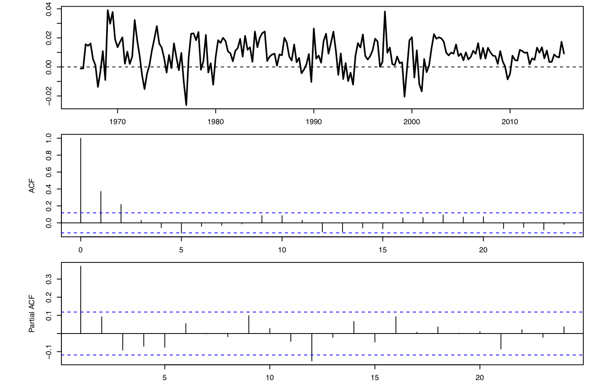
- What low-order AR or MA specifications are suggested by these diagnostics?
- Can the plots alone establish strict stationarity?
- Explain how you would choose between the candidate models in practice.
Exercise 2.6 (Maximum likelihood for an exponential duration) PS2 | Core | Analytical
Review Section 2.8.1.
Customer inter-arrival times \(y_1,\ldots,y_T\) are i.i.d. exponential with scale parameter \(\lambda>0\): \[f(y;\lambda)=\lambda^{-1}\exp(-y/\lambda),\qquad y\geq0.\]
- Write the log-likelihood.
- Derive the maximum-likelihood estimator of \(\lambda\).
- Compute the Fisher information and the estimator’s asymptotic standard error.
Exercise 2.7 (A periodically centered AR(1)) PS2 | Advanced | Likelihood and testing
Review Section 2.8.2.1.
Consider \[ y_t=\cos(\psi t)+\rho\{y_{t-1}-\cos[\psi(t-1)]\}+\varepsilon_t, \qquad \varepsilon_t\overset{i.i.d.}{\sim}\mathcal N(0,\sigma^2), \] with \(|\rho|<1\).
- Identify the process followed by \(x_t=y_t-\cos(\psi t)\).
- Derive the unconditional mean and variance of \(y_t\).
- Derive the conditional Gaussian log-likelihood for \(\theta=(\psi,\rho,\sigma^2)'\).
- Explain how to estimate \(\theta\) and its asymptotic covariance matrix.
- For monthly data, interpret \(\psi=2\pi/12\).
- Describe Wald and likelihood-ratio tests of \(H_0:\psi=2\pi/12\) and \(\rho=0.9\). Give the 5% and 1% critical values.
Exercise 2.8 (Estimating an AR(p) model for Swiss inflation) PS2 | Core | Estimation and diagnostics
Review Section 2.8.2.2.
The figure shows Swiss year-on-year inflation.
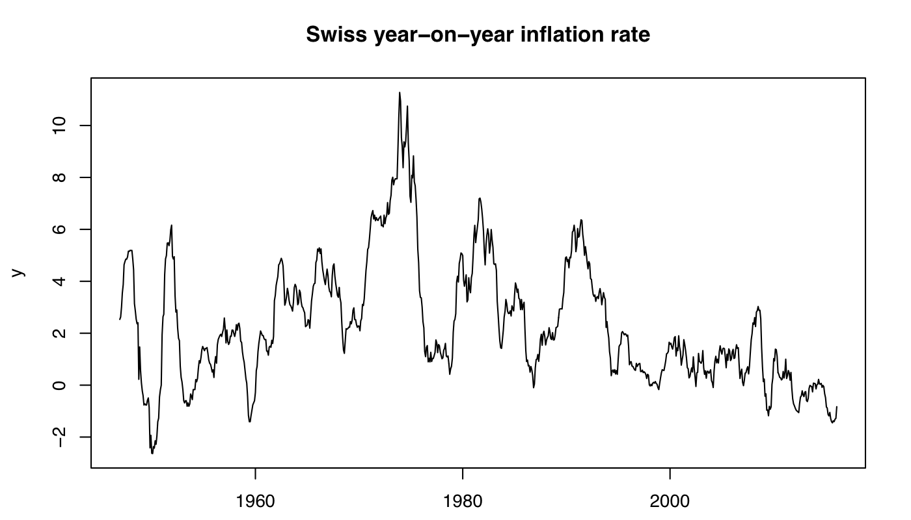
Model \(y_t=c+\phi_1y_{t-1}+\cdots+\phi_py_{t-p}+\varepsilon_t\), with \(\varepsilon_t\overset{i.i.d.}{\sim}\mathcal N(0,\sigma^2)\). Let \(Y=(y_{p+1},\ldots,y_T)'\) and let \(X\) contain an intercept and the \(p\) lags.
- Give the conditional maximum-likelihood estimators of \(\beta=(c,\phi_1,\ldots,\phi_p)'\) and \(\sigma^2\).
- For \(p=1\), \(\hat c=0.025\) (s.e. 0.019) and \(\hat\phi_1=0.987\) (s.e. 0.006). Is the fitted process stationary? Comment on persistence.
- Regressing the AR(1) residual on its lag gives 0.207 (s.e. 0.034). What does this imply about specification?
- For \(p=2\), the estimates are \(\hat c=0.033\), \(\hat\phi_1=1.194\), and \(\hat\phi_2=-0.210\). The lagged-residual coefficient is \(-0.027\) (s.e. 0.035). Check stationarity from the companion roots and assess the new specification.
Exercise 2.9 (Impulse responses and forecast uncertainty) PS3 | Core | Analytical
Review Section 2.6.
Let \(\varepsilon_t\overset{i.i.d.}{\sim}\mathcal N(0,\sigma^2)\) and consider:
- \(y_t=\varepsilon_t+0.5\varepsilon_{t-1}+0.2\varepsilon_{t-2}\);
- \(y_t=1+0.9y_{t-1}+\varepsilon_t\);
- \(y_t=1+0.5y_{t-1}+\varepsilon_t+0.5\varepsilon_{t-1}\).
For each process:
- Compute the impulse responses at horizons 0 through 4.
- State the corresponding first five Wold coefficients.
- Compute the mean squared error of the four-step-ahead forecast.
- Explain how parameter estimation changes forecast uncertainty.
Finally, consider \(y_t=1+0.5y_{t-1}+x_t+0.5x_{t-1}+\varepsilon_t+0.8\varepsilon_{t-1}\), with \(x_t\) strictly exogenous. Compute the dynamic multipliers of \(x_t\) at horizons 0 through 4.
2.10.1 Exercises from the 2024 exam
Code
EXAM-2024 | Exam | True/false
Review Section 2.2.
Let \(x_t=\rho_xx_{t-1}+\varepsilon_t\) and \(y_t=\rho_yy_{t-1}+\varepsilon_t\), where \(\varepsilon_t\overset{i.i.d.}{\sim}\mathcal N(0,\sigma^2)\), \(\sigma^2>0\), and \(0<\rho_x<\rho_y<1\). Conditional moments at date \(t\) use the history of both processes.
State whether each assertion is true or false and justify your answer.
- The contemporaneous correlation between \(x_t\) and \(y_t\) is zero.
- \(\mathbb{V}ar(y_t)=\mathbb{V}ar(x_t)\).
- \(\mathbb E_t(y_{t+1})=\mathbb E_t(x_{t+1})\).
- \(\mathbb E_t(y_{t+h})=\rho_y^hy_t\) for every \(h\ge1\).
- \(\mathbb{C}ov_t(x_{t+1},y_{t+1})=\sigma^2\).
Exercise 2.11 (Interpreting an autocovariance sequence) EXAM-2024 | Exam | True/false
Review Section 2.
A covariance-stationary process has \(\gamma_0=5\), \(\gamma_1=4\), \(\gamma_2=3\), \(\gamma_3=2\), \(\gamma_4=1\), and \(\gamma_h=0\) for \(h>4\).
State whether each assertion is true or false and justify your answer.
- The process can be a nondegenerate AR(4).
- It could be \(y_t=\varepsilon_t+\varepsilon_{t-1}+\varepsilon_{t-2}+\varepsilon_{t-3}+\varepsilon_{t-4}\) with \(\mathbb{V}ar(\varepsilon_t)=1\).
- \(\mathbb{V}ar(y_t)=\sum_{h=0}^4\gamma_h\).
- \(\operatorname{Corr}(y_{t-1},y_{t-4})=2/5\).
- Necessarily, \(\mathbb E(y_t)=\gamma_0\).
Exercise 2.12 (ARMA roots and moments) EXAM-2024 | Exam | True/false
Review Section 2.2.
Let \(\varepsilon_t\overset{i.i.d.}{\sim}\mathcal N(0,\sigma^2)\) and \[ (1-0.5L^2)x_t=0.1+0.5x_{t-1}+\varepsilon_t, \] \[ (1+1.1L)(1-0.5L)(1+0.4L)y_t=\varepsilon_t, \] \[ z_t+0.8z_{t-1}=(1+L+L^2)\varepsilon_t. \]
State whether each assertion is true or false and justify your answer.
- \(x_t\) is covariance stationary.
- \(y_t\) is covariance stationary.
- \(z_t\) is covariance stationary.
- \(\gamma_1(z)=-0.8\gamma_0(z)\).
- \(\mathbb{V}ar(z_t+0.8z_{t-1})=3\sigma^2\).
Exercise 2.13 (A one-date exogenous intervention) EXAM-2024 | Exam | True/false
Review Section 2.7.2.
For \(t\ge0\), let \[y_t=0.5y_{t-1}+x_t+\varepsilon_t,\qquad \widetilde y_t=0.5\widetilde y_{t-1}+\widetilde x_t+\varepsilon_t,\] with \(y_0=\widetilde y_0=0\). The inputs are deterministic, \(\widetilde x_t=x_t\) except at one date \(s>0\), and \(\widetilde x_s=x_s+1\).
State whether each assertion is true or false and justify your answer.
- For \(t<s\), \(\widetilde y_t=y_t\).
- For all \(t\ge s\), \(\widetilde y_t=y_t\).
- For every \(h\ge0\), \(\widetilde y_{s+h}-y_{s+h}=1\).
- If \(x_t\) is constant, \(y_t\) is an AR(1) with an intercept.
- \(\mathbb{V}ar(y_t)=\mathbb{V}ar(\widetilde y_t)\).
2.10.2 Exercises from the 2025 exam
Code
Exercise 2.14 (Conditional moments of two AR(1) processes) EXAM-2025 | Exam | True/false
Review Section 2.2.
Consider \[ x_t=\rho_xx_{t-1}+\varepsilon_t, \qquad y_t=\rho_yy_{t-1}+\varepsilon_t, \] where \(\varepsilon_t\overset{i.i.d.}{\sim}\mathcal N(0,\sigma^2)\), \(\sigma^2>0\), and \(0<\rho_x<\rho_y<1\). Conditional moments at date \(t\) use the history of both processes.
State whether each assertion is true or false and justify your answer.
- \(\mathbb{V}ar(y_t)>\mathbb{V}ar(x_t)\).
- \(\mathbb{V}ar_t(y_{t+2})=\mathbb{V}ar_t(x_{t+2})\).
- \(\mathbb E(y_t)>\mathbb E(x_t)\).
- \(\mathbb E_{t+1}(y_{t+h})=\rho_y^hy_{t+1}\) for \(h\ge2\).
- \(\mathbb{C}ov_t(y_{t+1},y_t)=0\).
Exercise 2.15 (Effects and forecasts in an ARMAX model) EXAM-2025 | Exam | True/false
Review Section 2.7.2.
Consider \[ y_t=\phi_1y_{t-1}+\beta_0x_t+\beta_1x_{t-1}+\varepsilon_t, \] where \(\varepsilon_t\overset{i.i.d.}{\sim}\mathcal N(0,\sigma^2)\) and \(x_t\overset{i.i.d.}{\sim}\mathcal N(\mu_x,\sigma_x^2)\). The two innovation sequences are independent. Conditional moments at date \(t\) use the history of \(x_t\), \(y_t\), and \(\varepsilon_t\).
State whether each assertion is true or false and justify your answer.
- Everything else equal, a unit increase in \(x_t\) increases \(y_{t+1}\) by \(\beta_1\).
- \(\mathbb E_t(x_{t+1})=\mu_x\).
- \(\mathbb E_t(y_{t+1})=\phi_1y_t+\beta_0\mu_x+\beta_1x_t\).
- \(\mathbb{V}ar_t(y_{t+1})=\sigma^2\).
- Everything else equal, a unit increase in \(\varepsilon_t\) increases \(y_{t+1}\) by \(\phi_1+\beta_0\).
References
Indeed, by the law of total variance \(\mathbb{V}ar(y_{t})=\mathbb{V}ar(\mathbb{E}_{t-k}(y_{t}))+\mathbb{E}(\mathbb{V}ar_{t-k}(y_{t}))>\). Since we have \(\mathbb{V}ar(\mathbb{E}_{t-k}(y_{t})) \ge 0\) and \(\mathbb{E}(\mathbb{V}ar_{t-k}(y_{t}))=\mathbb{V}ar_{t-k}(y_{t})\) that goes to \(+\infty\) (by what precedes), it comes that \(\mathbb{V}ar(y_{t})\) is not finite.↩︎
The Jordan matrix decomposition can be used in the general case.↩︎
If \(\phi_p \ne 0\) and \(\lambda\) solves Eq. (2.7) with \(|\lambda|<1\), then \(\lambda \ne 0\). If we define \(z=\frac{1}{\lambda}\), then \(z\) solves Eq. (2.6) and \(|z|>1\); Conversely, if \(\phi_p \ne 0\) and \(z\) solves Eq. (2.6) with \(|z|>1\), then \(z \ne 0\) .If we define \(\lambda=\frac{1}{z}\), then \(\lambda\) solves Eq. (2.7) and \(|\lambda|<1\)↩︎
Indeed, the sample autocorrelation coefficients, (\(\rho_j\)), are statistically significant for \(j \leq 2\) where \(\rho_2\) is barely significant↩︎
Indeed, the sample partial autocorrelation coefficients, \(\rho_{j,j}\), are statistically significant for \(j=1\) only↩︎
This method consists in approximating \(\mathbb{V}ar(f(\theta))\) with \(\frac{\partial f(\theta)}{\partial \theta}' \mathbb{V}ar(\theta)\frac{\partial f(\theta)}{\partial \theta}\).↩︎
Indeed, \((Y-X[c,\phi_1]')'(Y-X[c,\phi_1]')=Y'Y-[c,\phi_1]X'Y-Y'X[c,\phi_1]'+[c,\phi_1]X'X[c,\phi_1]'\). If we use the notation \(\beta=[c,\phi_1]'\), then \((Y-X[c,\phi_1]')'(Y-X[c,\phi_1]')=Y'Y-\beta'X'Y-Y'X\beta+\beta'X'X\beta\) whose derivative with respect to \(\beta\) corresponds to \(-2X'Y+2X'X\beta\). If \(\hat{\beta}\) maximizes the log-likelihood, then \(X'X\hat{\beta}=X'Y \Leftrightarrow \hat{\beta}=[\hat{c},\hat{\phi}_1]'=(X'X)^{-1}X'Y\)↩︎
The Gauss-Markov theorem’s strict exogeneity assumption is therefore not satisfied.↩︎